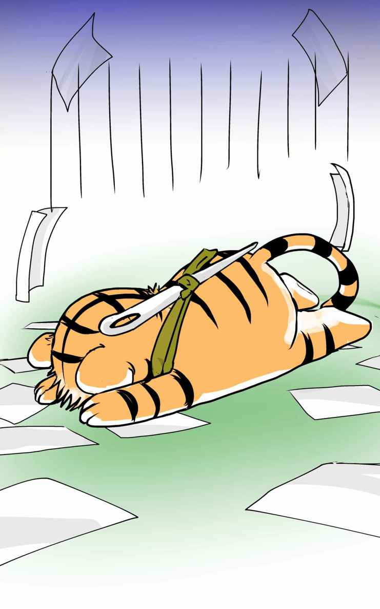
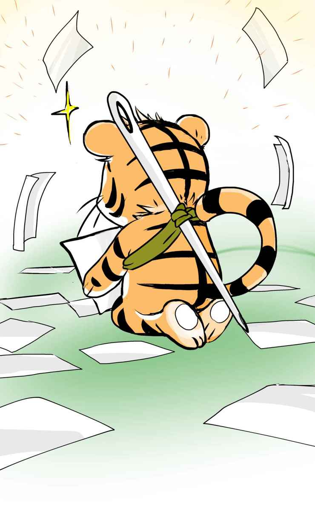

| ぼくのかんがえたさいきょうの小説プロットの書き方！ | |
| 針とら | |
| (2015) | |
ぼくのかんがえたさいきょうの小説プロットの書き方！
針とら
プロット。
小説を書く人なら、きっとだれでも一度は聞いたことがある言葉だと思う。けれどこのプロットというものについて、突っ込んで考えたことがある人ってどれくらいいるんだろ？
物書き界隈では、このプロットって言葉は、知っててとうぜんのものとしてひとり歩きしてる。
いわく、「プロットとは物語の設計図である。」
いわく、「プロットとは書き進めるときに道に迷わないようにするためのものである。」うんぬんかんぬん。
まことしやかにささやかれるそんな話を聞いた物書きたちは、自分もプロットを作れば小説をうまく書けるようになるのではないかと思って、プロットというものに手をだしてみる。
でも......そこではたと気づく。
プロットってどうやって書くんだ？
いざプロットを書こうと思ってみても、多くの人はその書き方がわからない。
だって、見たことないもの。
世の中には、「小説」は星の数ほど出版されていても、「小説の設計図」なんてものは出版されてないからだ。
......なら、出しちゃえばいいんじゃね？
というのが、本書の趣旨である。
自己紹介が遅れました。僕は駆け出し作家の針とら。無節操にいろんなジャンルの小説を書いてきて、去年なぜか児童小説からデビューした。デビューして１年ちょっと。アマチュアに１、２本、髪の毛か下の毛かなんかが生えたくらいのひよっこ作家だ。
本書は、僕が投稿時代に書いた10個の小説の設計図ことプロットを、広く公開してしまおう！ というものである。
それぞれのプロットには、当時考えていたことや、失敗したこと、学んだこと、プロットを読んだプロの編集者の反応などを、解説として付記した。
10個のうち５個は実際に小説化して電子書籍で販売しているので、プロットから実際にどういう作品ができるのかも見ることができる。（すてま！）
こういう実例があれば、どんなプロットが良いか悪いか、どんなポイントに気をつければ良いか......なんとなーく、の、参考くらいにはなるんじゃないだろうか。
もちろん、ひよっこ作家のプロットなんて参考になるかよ！ という向きもあるだろう。
けれど、ものは小説ではなく、小説の設計図の話だ。天才は感覚でなんとなくできちゃうものなので、逆にその感覚を言葉にはしにくいんじゃないだろうか。凡人が努力して習得していった過程の方が、理解しやすいってこともあるんじゃないかな。
百戦錬磨のプロや編集者じゃないぶん、アマ物書きの目線ってやつもわかるんじゃないかなと思っているし。僕はまだまだアマ気分！
そんなわけではじまる、ぼくのかんがえたさいきょうの小説プロットの書き方！
プロット難民の皆様の一助となれば幸いである。
はじめに、僕のプロット経験とプロット観を示しておこう。
まず、プロット経験。
投稿時代、二年半ほど小説教室にかよっていたが、そこの研究会でいくつかプロットを書いた。数は、短編用４つ、長編用１つ、ドラマ向け１つ。
教室外で独自で書いたプロットは、短編用３つ、中編用１つ。メモ書きみたいなものを含めると、もっとたくさん。
デビューしてからは......長編用で１５くらい、短編用で10くらい。ラフ的なものは別にまた10数個。ほとんどボツ。
読んだプロットは、前述の小説教室の研究会で、他の受講生のプロットを百個くらい。
本書では、僕の投稿時代のプロットを扱う。
つぎに、プロット観。
投稿時代にほかの受講生の書いたプロットと編集者の講評を聞きながら思ったことと、デビューしてから担当編集者さんたちとやりとりしながら思ったこと、両方ひっくるめての現時点の僕の考えは、以下のようなものだ。
それは、「プロット」に対する捉え方って、書く立場の人間と、読む立場の人間で、ぜんぜん違っているってことだ。
プロットはその目的によって、大きく２種類に分けられる。
「人に見せるためのプロット」
と、
「自分が書くためのプロット」
だ。
前者は、企画書に近い。作家が、取引先である出版社とすりあわせをするために書くものだ。
後者は、設計書に近い。作家が、自分が書きやすくするために書くものだ。
あくまで持論だけれど、プロットという言葉は、このベクトルの違う２つの文書を両方指している。語る人の立場や考え方によって、プロット＝企画書であり、プロット＝設計書になる。
さらにいえば、どちらかが１００％、ということはなく、両方の側面をあわせ持つ。基本的には企画書だけど、ところどころ設計もわからなくちゃ困る、とか、基本的には設計書だけど、企画コンセプトを含んでいないと道に迷う、とか。
僕はソフト屋なのでソフト屋の言葉で例えるならば、企画書とか機能仕様書とか設計仕様書とかもろもろのドキュメントのすべてが「プロット」の一語で扱われていて、ソースコードだけが「本文」になっている、といった具合だ。どうだ、恐ろしいだろう。
みんながみんな、それぞれの視点での「プロット」を語るから、プロの作家や編集者の話をいくら聞いたところで、アマチュア作家はわけがわからなくなってしまうばかりなのだ。
そのへんのことを踏まえながら、以下、読んでいってもらえるとありがたい。
昔、僕が書いたプロットを、まずは「人に見せるためのプロット」の方から、振り返っていってみる。
これは、当時かよっていた小説教室のプロット研究会で提出しようと思って書いたプロットだ。課題がだされて、複数テーマの中から１つを選んでプロットを書き、提出、合評を行う。
実際には、急用が入って出席できなくなってしまったので、お蔵入りにしたのだが、僕がはじめて書いた小説のプロットになる。
これを題材に、プロットの問題の１つ、立場の問題について考えてみたい。
以下の３つのうちのどれかを選んでプロットを書くこと。（Ａ４用紙一枚以内）
①フリーテーマ
②以下の短歌をモチーフにしたプロット。
・アルバムの中の少女が坐す石段を老いて探せり書写の山寺
③以下の設定を活かしたプロット。
・ルームシェアの相手が、あるものを残して姿を消し、また、同じように姿を消した人が何人かいる。
また、作品のセールスポイントを明確にするためのコピーを付けること。
概要
日付 ：2009.6
タイトル ：ふたりぼっちの牢獄
選択テーマ：③
コピー ：『この容赦のない世間の中で、仲間はルームメイトただ一人だったのに――』
登場人物
忠彦 ：コンビニでバイトをはじめたばかりで、その前の職歴はなし。
竹下 ：五十代後半。忠彦のルームメイト。パチンコ屋でバイト。
金森夫妻 ：六十代前半。忠彦がきちんと生活できているか心配している。
内容
①一人暮らしの財政的厳しさを諭され、ルームシェアの相談に訪れた忠彦。不動産屋は金森さんの頼みだから仕方ない、と忠彦に物件を紹介する。
入居先には竹下が先に入っていた。どこから来たと聞かれ検見川と答えると、自分もすぐ近くからだと嬉しそうな竹下。忠彦は不快。
②バイトをする忠彦。バイトは始めたばかりで流れについていけず失敗。パソコンも使えない。いい歳してバイト、しかも職歴がないことで、高校生バイトに嘲笑される。
部屋に帰ると酒浸りの竹下が絡んでくる。金もなく仕事もできない竹下が、若い頃の武勇伝を語る。竹下は忠彦を仲間だと思っている。忠彦は惨め。別れた女を思い出すが連絡をとるわけにはいかない。学生時代に一度結婚したが、向こうの親に別れさせられたのだ。
③金森夫妻と忠彦。新生活の調子を尋ね、ようやくまともな生活を始めたのだから頑張るのよと励ます夫妻。鬱陶しく思う忠彦。
部屋に帰ると竹下が絡む。検見川の話を聞きたがる。仕事で疲れているのにしつこく話しかけられ、爆発する忠彦。ルームシェアなんて最低だ、一人のぶんだけ独房の方がまだましなんじゃないかと皮肉る。翌日、竹下は姿を消した。ピストルが一丁残されていた。
④金森夫妻と忠彦。バイトで、何もできない奴と嘲弄され辛いという忠彦に、耐えろ、仕事を辞めるのだけは駄目と夫妻。ルームメイトが消えたことを話すと、夫妻は驚き慌てる。近頃、他にも同様の話を聞いたとぽろりと零す夫妻だが、詳しくは教えてくれない。家の前で待ち伏せし、訪ねてきた若者から直接話を聞く。若者のルームメイトも姿を消していた。自殺したのかもしれないと若者は言う。
⑤不動産屋を尋ねるが、新しいルームメイトはまだ。家賃と酒で生活が厳しい。検見川から手紙が届く。元気か、こちらは相変わらずという文面に懐かしい名前が連なる。涙を零す忠彦。手紙には、今度一人そっちに行くとある。期待する忠彦。竹下という男のことを知らないかと手紙を返す。
⑥バイトで忠彦は避けられるようになった。別れた妻に電話をかけても実家の親が拒否。もう遥か昔の話。貴方のせいで娘は傷ついた。
⑦手紙の返事が来る。竹下は三十年前ピストルで強盗殺人を犯して服役し、一年前に出所していた。
新しいルームメイトにすがるが邪険にされる。雑居房を思い出すと言われる。
忠彦は二十代で殺人を犯し、二十年間を堀の中で過ごした。世の中は変わってついていけない。財政負担軽減と相互監視のための保護観察者ルームシェア制度。金森は保護司だ。
刑務所のことなど忘れて再出発したいと言うルームメイト。忠彦は自分の思い出話が相手を苦しめると知る。堀の外にはもう誰も仲間などいない。これを撃てば救われるだろう。忠彦はピストルを手に持ち、姿を消した。
本題に入る前に、プロットの中身を、裏面まで含めて解説する。以下のようになる。
＊ ＊ ＊
刑務所を出所した主人公は、保護司の紹介でルームシェアをすることになった。先に出所していたルームメイトは、既に一般世間の洗礼を受けて、刑務所を懐かしがっており、主人公と刑務所の昔話をしたがる。けれど社会復帰に燃えている主人公には、それが不快だ。
主人公は働きはじめるのだが、世間の流れについていけず、怒られてばかりいる。保護司との面談のときに愚痴をこぼしても、出所したばかりで仕事を辞めるのはまずいからがんばれとなだめられるだけ。
ルームメイトは主人公を慰めようとするのだが、前科者である記憶を払拭したい主人公には、ルームメイトのその仲間意識そのものが鬱陶しい。主人公は日頃の鬱屈をルームメイトに爆発させ、ルームメイトは自分の存在が主人公を追い詰めていると気づき、一般社会と刑務所世界（前科者としての連帯意識）の両方で居場所を失って、行方をくらます。
ここまでで①～③の前半部。
後半部では、主人公は、世間の流れについていけないばかりか、前科者であるということが職場でバレてしまい、いっそう排斥されていく。消耗しきった主人公のもとへ、新しいルームメイトがやってきて、主人公は彼に仲間意識を持つのだが、新しいルームメイトはかつて主人公が前のルームメイトにしたのと同じように、主人公を拒絶する。
そうしてようやく主人公は、前のルームメイトがどんな気持ちだったかを身をもって知り、彼が行方をくらましていったいどうしたのか、真相を理解する。そして、その後を追おうと、ピストルを持って部屋を後にする。
撃つのは自分の頭か、あるいは誰かを撃ち抜いて刑務所という自分の居場所へ戻るのか。
＊ ＊ ＊
さて、プロットの問題に戻る。
このプロットは編集者には見せていないが、見せてもたぶん、まったく話が通じなかっただろう。
ＷＨＡＴとＨＯＷの切り分けが、まったくなされていないからだ。
人に見せるプロットで一番むずかしいのは、「立場の問題」である。
相手はプロットから何を見ようとし、自分はプロットに何を書こうとしたか。立場によって、そこで視点にズレが生じる。
編集者と作家の場合、ＷＨＡＴとＨＯＷでズレることが多いような気がする。
あなたはこのプロットを、どういうスタンスで読んだだろう。
この話で僕が考えていた狙いを端的に言うと、
『読者は、主人公はニートだと思って読んでいたのに、最後に、じつは前科者であると判明する。そのときにはじめて浮かび上がってくるテーマの鮮烈さで、読者に強い印象を残せないか』
ということだった。
要はこれ、『叙述トリック』が眼目のお話なのだ。
ラストにいくまでは、主人公が刑務所から出所したことや、金森さんが保護司であることは伏せておいて、いい歳して職歴がない主人公を、引き篭もりニートと読者に勘違いさせておく。不動産屋が主人公を信用してないのも「ニートを信用してないから」、金森さんが面倒見がいいのも、いい歳した主人公に世話を焼きすぎる両親のように描写する。
前半部でそのイメージを構築しておいてから、ピストルの登場をターニングポイントに、バイト仲間からの排斥や、彼女の両親の態度、金森さんの家にやってくる他の人間の存在や、かつての仲間といった齟齬を出していって違和感を増長させ、ラストで完全に世界観をひっくり返す。
この容赦のない世界の中で、わかりあえる仲間はルームメイトただ一人だったのに。
救いってなんだろう？
......そんなお話を書きたかった。
が、問題は、これらが完全にＨＯＷの視点だということだ。
ＷＨＡＴ（なにを書くか）の視点ではなく、ＨＯＷ（どう書くか）の視点。
実際に小説を書く際に、どう描くか、どう情報をみせようか。①から⑥まで全部、そのための伏線配置、流れを考えて書かれている。
で、そもそもの、
「"叙述トリックで世界観がひっくり返ったときの衝撃"が眼目の小説であること」
が、伝わる書き方をしていないのだ。
プロット本文だけでは、編集者は最初の部分を読んでいるうちに、なんか地味な話だなぁ......と興味を失って、最後まで読んでもくれないだろう。
「どう書くか」という部分に、編集者はあまり興味がない。
そりゃそうだ。たとえば「パソコンで何ができるか」に興味がある人はいても、「パソコンがどう動いてそれができるようになっているか」なんて、興味ある人はほとんどいないでしょう？
それに興味があるのは「作る人」だけだ。
自分が１から10まで「作る」からこそ、作家は「どうやって」の部分に意識がいきがちなのだ。
編集者は、「作る人」ではない。そのパソコンの「商品価値を判断する人」だったり、「どう売るかを考える人」だから、「どう作るのか」には興味がないのだ。興味があるのは、「どんなパソコンか」「どういうことができるようになるパソコンか」「それで客が買おうという気になるか」の方。あとは「ちゃんと作れるか」には、興味があるかもしれないけども。
作家と編集者。
担当する仕事の責務範囲によって、プロットから読み取りたいものがちがうのだ。
だから、このプロットの評価としては、「自分が書くためのプロット」としてなら、作品自体の方向性はともかくとしてプロットとしてはそれほど悪くないと思う。「どう書くか」をきちんと込めている。
けれど、「人に見せるためのプロット」としては、失敗作だ。「なにを書くか」がわかるようになっていない。
ＷＨＡＴ（なにを書くか）の視点と、ＨＯＷ（どう書くか）の視点。
読む相手と自分の立場、あるいは書こうとしている話の性質によって生まれる、この視点の違いを意識する。
そうすると、今までより伝わりやすいプロットを書けるし、人から適切なアドバイスを受けられるようになるんじゃないかな、と思っている。
このプロットは、「ショーシャンクの空に」という有名な映画に影響を受けてつくったものだ。
映画のなかのエピソードの一つに、ずっと刑務所で生活を送っていたおじいさんが、何十年かぶりに出所して、変わりきった世の中の流れについていけずに、自殺してしまう、というものがある。
ふつうの賑やかな街よりも、人々からは忌避される刑務所の中こそが、おじいさんの居場所だった。
そんなエピソードが印象に残っていて、そういう、人間のやるせない哀しさを描きたいなぁ、と思って書いた。
＊ ＊ ＊
このＷＨＡＴとＨＯＷの話は、ソフトウェアの世界でも散々言われることだったりする。
小説書きとソフトウェア作りには、共通するところがかなり多いのだ。
それは「言葉」を使って、「目に見えないもの」を作り、顧客に感動を与える、という点が共通しているからだ。かたやプログラミング言語で、かたや自然言語の話ではあるけれど、「目に見えないもの」をクライアントとのあいだで合意して作っていくっていう意味で、２つは同じ種類のむずかしさを抱えているのだ。
僕はデビューしてあらためて、上流工程できちんと整合をとるのは大切だよなぁ......と思うようになった。
だれにもわかってもらえた試しはないけど。
＊ ＊ ＊
なお、プロ作家でも、特にミステリ作家などトリック主眼の人は、ＨＯＷ先行でプロットを書いてる人も多いみたいだ。
けど、それは人に見せるためのプロットではなくて、自分が書くためのプロットとして書いている。
人に見せるためのプロットの部分は、編集者に直接口頭で補っているのだ。
これは、小説教室に、テレビドラマに使うためのプロットの募集がかかって、それに応募するために書いたもの。
僕の書いたなかで一番の失敗プロットなんだけど、そのまま掲載する。
さて、このプロットのなにが問題か、わかるだろうか。
あまりまじめに読まなくていい。
２時間ものテレビドラマに使うためのプロットを書くこと。（Ａ４用紙五枚以内）
〝仲人〟をテーマにしていること。
概要
日付 ：2010.2
タイトル ：叶うな結び
主要登場人物
岩崎名美（４１）仲人会社「苑結び」所属の仲人。彼女が取り持った縁談はことごとく不幸を呼ぶという噂。見合いを取り持った大場徹が捕まり、彼の無罪を晴らすために事件に関わっていく。 [探偵役]
隅田曜子（３７）「苑結び」所属の超人気仲人。彼女が取り持った縁談は幸せを呼ぶと評判。名美の友人。
小暮菊江（５４）「苑結び」所属の仲人。経歴が悪くまともな縁談ができない人間に、真っ当な縁談を組んでやることに、仲人としての意義を見出している。
春日寛之（４６）「苑結び」に新規加入した仲人。各地の結婚相談所を点々としている。
大場徹（２８）「苑結び」会員。古い体質の旧家の長男。結婚を迫る周囲に辟易している。[冤罪役]
曽根沙那（２６）「苑結び」会員。親に花嫁姿を見せるため会員になったが、結婚に夢は持っていない。
馬場晴香（２２）「苑結び」会員。春日のスカウトで入会。 [被害者１]
北上遼一（２８）元「苑結び」会員。春日のスカウトで入会。現在は結婚し退会。元暴力団員。[被害者２]
小暮麻衣（３１）小暮の娘。数年前に地方から家族で上京。思春期時分の素行の悪さ故、地元の評判は悪い。
酒井達也（３０）「苑結び」会員。馬場晴香を非難するブログを立ち上げる。
高橋翔（１４）母親が再婚相手から暴力を受けていることに心を痛める少年。
秋元卓也（３８）「苑結び」所属のオタク専門仲人。マニアックな見合いが癖になると評判。名美の友人。
有賀茜（４０）「苑結び」所属の元極道仲人。彼女の見合いは命懸けだと恐れられる。名美の友人。
芳賀隆史（４０）結婚に焦るベテラン刑事。名美とは古い付き合い。
内容
起 [お見合い会場] 縁談を取り持っている岩崎名美。いい雰囲気だったが、廊下から、名美が過去仲人をした男女にはことごとく災いが降りかかっているという噂が聞こえてくる。ちょうど地震や火災警報機の誤作動が起こり、見合いは滅茶苦茶に。別の部屋では、仲人仲間の秋元卓也や有賀茜の変な見合いが展開されている。
[名美の自宅] 仲間（隅田曜子、秋元卓也、有賀茜）と集まって酒盛り。曜子は男女の相性を見抜くのが抜群に上手く、見合いが幸せを呼ぶと評判の人気仲人だが、近頃は縁談をもっていない。真逆の評判に落ち込む名美。名美の息子の明は、恋人を曜子に紹介したいと言い、名美が自分にもと言うと完全拒否。
[お見合い会場] 大場徹と曽根沙那の見合いを取り持つ名美。二人はなかなか盛り上がらないが、ぽつぽつ本音を語り始めると、本当は結婚なんてしたくない、と変な方向で意気投合してしまう。見合い後、頭を抱える名美に、寄ってくる春日寛之。徹にいい縁談があるとのこと。
[徹の家] 今日の見合いは面白かったと笑う徹に周囲が苦言。名美からの電話で馬場晴香との見合いを決定。
[酒井家] 交際していた晴香に振られ、やり場のない苛立ちを抱えた酒井達也。父の義明はある日家のパソコンを使っていて、達也の『馬場晴香を糾弾するブログ』を発見する。女慣れしていずネットでだけ強気な息子に呆れる義明。ネットのコメントでも、大半は達也非難。
[苑結び・社内] 『ここには最低の仲人がいる』という怪文書が届き騒ぎになるが、単なる嫌がらせだろうということになる。明日はよろしくと春日に挨拶する名美。裏でほくそ笑む春日。
[路上] 苑結びに向かう徹。通りすがりに、明日の相手方仲人である春日を発見。春日は電話をしており、晴香、と呼びかけている。聞き耳を立てる徹。
[酒井家] ブログに、見合い相手の名前を検索して辿り着いたという書き込みを発見する達也。達也は晴香への報復を頼む。翌日ブログを見ると『殺してしまった』。犯人しか知り得ない事柄が記述されている。
[事件現場] パトカーが集まり、発見された晴香の死体を検分。捜査員の一人がノートパソコンを使い、死体の名前から達也のブログに達する。直ちに晴香の見合い相手を探すよう緊急指令。
[名美の自宅] 徹が捕まったという電話を受け、驚く名美。
インターミッション１ [一年前・高橋家] 再婚した夫の一彦から暴力を受ける由紀と、それを心配する息子の翔。離婚しようにも貯金を使い込まれ由紀の職もなく八方塞がり。エスカレートしていく暴力。
承１ [留置所] 留置所を訪れる名美だが、徹との面会はまだできない。徹の主張は、ブログに書き込んだのは事実だが、最後の殺人告白の書き込みだけは自分ではないというもの。顔見知りの芳賀刑事は、確かに、徹の自宅から成されたことが確認された他の書き込みと違い、最後のものだけは漫画喫茶からだという。真犯人が徹を陥れたと主張する名美だが、芳賀は取り合わない。名美はブログの管理者にコンタクトをとりたいが、ブログは既に閉鎖済み。美人との縁談話と引換に、芳賀から情報を貰う。
[酒井家・他] 達也と義明の話を聞く名美。晴香は何度も縁談をもっていたらしく、名美は、真犯人は晴香に振られて恨みを持つ人間ではないかと推理する。達也のブログのログから、晴香に貢いだ末に振られたという男何人かとコンタクトをとる名美。恨みのほどを聞くが、皆、自分にコンプレックスを持っているなどし、仕方ないと諦めていた。周囲の人間も、晴香を責めるより彼らの不甲斐なさばかりを話す。
転１ [名美の自宅] 仲間と相談。春日の話題になる。結果的に失敗縁談ばかりなのに、誰も仲人の春日に文句を言っていないのは何故か。秋元は、詐欺られた被害者自身、自分が被害に遭ったのか通常の男女関係で振られたのか把握できないという、結婚詐欺の認知の困難さを指摘。特に異性慣れしていない人間ほど、自分の落ち度で振られたのだと当人も周囲も思い込む風潮があり、表面化しにくい。春日は詐欺師と組んで、金を出しそうで振ったあとも問題になりにくいカモを狙って稼いでいたのではないか。
[苑結び・社内] 春日が取り持った過去の縁談記録を調べ、詐欺を確信する。初めはシラを切っていた春日だが、茜が凄むと白状する。春日は数人の詐欺師と組み、各地の結婚相談所を渡り歩いて稼いでいたのだった。／上層部に信頼の厚い曜子を通して、経緯を社長に報告する名美たち。これを機に仲人としてのモラルを考えなおそうという風潮が生じ、独自の縁談の理想を語る小暮菊江など。／春日は馘首になり、春日が連れていた詐欺師会員も強制退会となるが、一人、既に結婚して退会していた男がいた。名前は北上遼一。
インターミッション２ [一年前・高橋家] エスカレートした暴力に入院する由紀。翔は、見舞いにきていた仲人が、一彦に対し、あなたのような人が結婚できたのは自分のおかげだと話すのを聞く。仲人は一彦の評判の酷さを知りながら、由紀に紹介したのだ。怒りに拳を震わせる翔。
[現在・場所不定] 男の頭をバットで叩き割る人影。
承２ [留置所] 警察は春日と組んでいた詐欺師を洗っているという。晴香が詐欺師間のトラブルによって殺された可能性が考慮され始めたためだ。実は初めから徹の証言（春日が電話で晴香と詐欺の密談をするのを聞いたというもの）によって、その疑惑はあったのだと嘯く芳賀。／留置所では、名美より先に沙那が面会に来て、細々とした世話を焼いていた。徹は、奥さんがいたらこんな感じなのかなと、まんざらでもなさそう。
[苑結び・社内]「事件はまだ終わらない」と怪文書が届き、犯人の仕業ではないかと戦く一同。噂で、一年ほど前にも、仲人を中傷するビラが撒かれたという事実を知る名美。中傷されたのは小暮。
[小暮家] 問題のビラは、小暮が問題のある人間ばかりを専門に縁談を組んでいると指摘したものだった。小暮は否定し、仮にそうであっても、経歴の傷や噂だけで人間の可否を判断することの方が問題だと主張。／離れから、娘の麻衣登場。半年前に結婚してとても幸せだと朗らかに笑う。夫は出張中という。麻衣は、中傷ビラの差出人は、一年前に家にやってきたので追い払った翔だろうと言う。／ビラと二通目の怪文書の筆跡が同じことに気づく名美。そういえば一通目と二通目の怪文書の筆跡は違う。
[高橋家] 翔は数日前から帰ってきていない。由紀は離婚したが、身体に障害が残っている。
転２ [公園・ゴミ捨て場] 死体が発見され、警察は小暮麻衣の夫の小暮遼一だと断定。現場には、翔のバットと、自分たちを不幸にしたのに幸せになるなど許さないという趣旨のメモあり。二通目の怪文書と同じ筆跡。
[留置所] 徹釈放。晴香を殺した詐欺師の藤崎俊樹が捕まったため。俊樹は晴香殺害は認めるが、怪文書と小暮遼一の殺害は否定。警察は、遼一の殺害は俊樹の犯行に乗じた翔のものと判断。
[名美の自宅] 徹の釈放祝い。事件の話題で、北上遼一と小暮遼一が同一人物であることに気づく。茜は、北上は危険な男だったと言い、麻衣が幸せな結婚生活を送っていたとは思えないと主張。
[小暮家周辺] 聞き込み。小暮家は娘夫婦の夫婦喧嘩の声が絶えなかったが、数日前の大喧嘩後ぴたりとやんだという。地元での麻衣、遼一それぞれの評判の悪さも聞こえてくる。名美は、麻衣が遼一を殺害し、小暮家を恨む翔に罪をかぶせようとしたのではないかと推理。／芳賀からの電話で、自殺を匂わせる翔の筆跡の手紙が届いたとのこと。麻衣が翔を殺そうとしていると判断し、家に押入るが、もぬけの殻。離れには、翔が閉じ込められ、怪文書や手紙を書かされていた痕跡。地図があり、秋田の山奥のページに印。
結 [山奥] 翔を生き埋めにしようとしていた小暮と麻衣に追いつく。小暮は、あなたがあんな男を紹介しなければこんなことにならなかったと、曜子を罵倒する。／一年前、曜子は、ビラを配る翔を捕まえた。問題のある人間を紹介されてどうなるか、あの一家にも思い知らせてやりたいと泣く翔に同情し、危険な男と承知で北上を麻衣に紹介した。仲人として絶大な信頼を得ていた曜子の紹介とあって縁談は成立。その後、小暮家は不幸になった。一通目の怪文書は、小暮が曜子を非難したものだったのだ。／怒る小暮に、曜子は仲人として最低のことをしたと真摯に謝罪。その姿に小暮は初めて自分の行いを省み、麻衣は怒りにナイフを振りかざした。
エピローグ 退院した曜子は、自分に仲人の資格はないと、苑結びを辞めて去っていった。幸せの仲人の役割を名美に引き継いで。／徹と沙那の結婚式のスピーチをする名美だが、次々に天災が起こり、頭を抱える。
内容とかどうでもいいんです。
なにが問題かって、
読・み・に・く・い！
Ａ４用紙五枚にぎゅうぎゅう詰めにしたので、文字がぎっしり。これだけで、相手にはまじめに読まれないと思った方がいい。
実際、テレビ局の人のコメントは、
『書いている内容が、よくわからない』
の一行だけだった。端的だな！
一週間くらい考えに考えて書いたのにー！
これも、相手が求めていたものが「なにを書くか」で、僕が書いたのが「どう書くか」だったことから起きた悲劇だ。
相手が欲しかったのは、「商品をつくる方法」を記した設計書ではなく、「商品はなんなのか」が記された説明書き。
もっといってしまえば、「商品のウリはなんなのか」というコンセプトの方だった。
つまり、相手の言うプロットって言葉は、「企画書」だったのだ。
僕はそこへ「詳細設計書」を書いて提出してしまったから、一行切り食らっちゃったのである。
もともとの発想の元としては、
「仲人なのに、担当したカップルが全員ひどい災難に見舞われて破局してしまう主人公のキャラっておもしろいかな？」
くらいのアイデアだった。
アイデアから話を広げていって、具体的にこういうシーンからはじまって......と詳細のシークエンスに落としこんでいったら、コンセプトが枝葉の展開に紛れて見えなくなっちゃった。
「担当したカップルが全員ひどい災難に見舞われて破局してしまう仲人を主人公にしたお話です。（内容は未定！）」
とか僕も一行で書いておいた方が、むしろ伝わったんじゃないだろうか。
小説教室では他の受講生のプロットもたくさん見たけど、やはり設計書のスタンスで書かれたものがほとんどで、なかなか編集者に理解されないようだった。
売れっ子プロ作家さんのプロットも何点か見たけど、やっぱりプレゼン要素が強かった。このへんが、商業と非商業のちがいなのだろう。
日常的に企画書を作ったりする立場の人は、もとからそういうのうまいのかもしれないけれど、そうでない人は意識してみるといいかもしれない。
ちなみに僕はエンジニアで、バリバリの「作る人脳」なので、苦労した。ていうか、してる。
＊ ＊ ＊
なお、この話は中身にまったく思い入れがない。
なんで今の時代に仲人がテーマのテレビドラマやねん......。
これも、かよっていた小説教室のプロット研究会で提出したもの。
このプロットが抱える問題は、前２つに比べると万人に共通するものではないかもしれない。
文章を読むときの感覚の話だ。
以下のうちのどれかを選んでプロットを書くこと。（Ａ４用紙一枚以内）
①以下の短歌のうちのどれかをモチーフにしたプロット。
・雨の夜に鍵束出せり鍵の音かばんの闇に残したるまま 栗木京子
・たちまちに団地の人ら老けてゆく四丁目餅つきの列に並びて 花山多佳子
・伯父の忌に訪いし本家は部屋ごとに時計を掛けて皆とまりおり 大島史洋
②以下の状況を活かしたプロット。
・別れ話を切り出せない男と女
また、「その作品で読者に何を言いたいのか」を付けること。
概要
日付 ：2009.11
タイトル ：遅れる時計のなおしかた
選択テーマ：①『伯父の忌に 訪いし本家は 部屋ごとに 時計を掛けて 皆とまりおり』
この作品で読者に何を言いたいのか： 気持ちに余裕を持つことの大切さを、時計を絡めて。
内容
１．（現在）
隼人はしっかり者の小学五年生。叔父の法事のために田舎に向かう途中。両親がのんびり屋だから隼人が時間管理をしていたのだが、腕時計が遅れていたため、予定していた電車に乗り遅れてしまう。この頃この時計はすぐに遅れる。両親に直せるか訊くが無理だという。
電車の本数が少なく、無駄な時間を過ごすことになったと苛立つ隼人。両親は空いた時間で、のんびり談笑している。
２．（現在）
法事の準備。子供はやることがない。時間を有効に使うため宿題を持ってきていたが、法事に来てまでと嗜められ、他の親戚の子と遊ぶように言われる。仕方なく家の中を探検していると、すべての部屋の時計が、同じ時刻で止まっていることに気付く。他の子や両親を呼んで確認させると、普通に動いている。
みな隼人の話に取り合わないが、自分は二百歳を越えていると主張する変わり者の男が、時計たちが喪に服していたのだろうと言う。時計は普通、義務として時を刻んでいるが、人と絆を結んだ時計は、人のために時を刻むようになるのだと。隼人は馬鹿らしいと思いながらも、彼の話を聞く。
３．（過去）
和則は隼人の叔父・明のクラスメイトで、病弱の身で一日を病室のベッドで過ごしていた。病院の待合室で偶然会い、滅茶苦茶な時間を指している明の腕時計に、時間なおさないの、と和則がいう。こいつは時間に縛られることにうんざりしているんだ、無理やり縛り付けたくない、と返す明。変な奴だと思う和則だが、やがて二人は仲良くなり、道を外れた時計たちを集めてきては、好き勝手に時を刻ませはじめた。ルールは、彼らの時をなおさないこと。秒針の動きまでぴったり揃った二つの時計を、二人の時計と決めた。
４．（過去）
病状が悪化し、学校に行けずに過ぎ行く日々を焦る和則。ある日、和則の時計が動きを止めた。落ち込む和則に、立ち止まっているだけだと言う明。どんな時計も本当の時を指せる一瞬なんてそうありやしない、でもこの時計は止まることによって、一日に二回も正確な時間を示すことができる凄い時計なんだ。
卒業式までもたないことを告げられた和則。明と一緒の卒業式を楽しみにしていた彼は一人枕を濡らす。その日、看護士が時計の電池を入れ替えて針を合わせると、止まっていた和則の時計は、取り返すように急ぎ足に時を刻み始めた。時計の動きに従ってカレンダーをめくっているうちに、この病室にいると時が早く過ぎると発見する明と和則。二人は病室の時間を基準に生活を送る。
あっという間に時は過ぎ去り、「卒業式の日」まで和則は生きている。喜び勇んで学校に行くが、もちろん式などやっていない。
５．（過去）
たがが外れ、明に当たる和則。調子の狂った時計が早く進んでいただけじゃないか、時計ばかり集めて馬鹿みたいだと喚き、時計を壊し、明を追い出す。死の恐怖を感じながら過ごす和則だが、次の検査で病気はすっかり良くなっている。卒業式までもたないと言われたのに、卒業式を越せたからだと思う和則。
仲直りしようと思って行った本当の卒業式に、明の姿はなかった。家業を継いで転校していったのだという。手紙には、腕時計の針が一周して元に戻っちゃったんだ、でも前ほど嫌じゃなさそうだ、とあった。
６．（現在）
隼人は、家でみつけた壊れた時計を和則に差し出す。調子の狂った時計なだけだが、思い出の品なのだろうと。そんな隼人の心中を読み取り、和則は言う。本当に調子が狂っただけだろうか？ 好き勝手に動いていた病室の時計たちだが、和則の時計と他の時計との差は常に一定だった。だから信じこんでしまった。
全員で歩調を合わせて、調子を狂わせていたんだ。あいつら、団結したんだよ。
隼人は腕時計が遅れるのだが、直し方を知らないかと訊く。和則は、時計の気持ちになればわかるという。
７．（現在）
帰りの電車に乗り遅れ苛立つ隼人だが、空いた時間で家族と観光し、電車の時間にならなければなと思う。そして、腕時計は、いつも忙しない隼人のために、余分に時間をくれようとしていたのじゃないかと思う。
ゆっくりやるよ、と時計に告げる隼人。それから時計はあまり遅れなくなった気がする。
このプロットは、常に時間に追いかけられるようにきっちりきっちり生きている現代の男の子が、おかしな時計たちの話を聞いて、ちょっと人生にアソビを覚えるっていうハートウォーミングストーリーだ。
けれど、編集者にはうまく通じなくて、「不条理ドラマ」と思われてしまった。病室だけが時間の流れから切り離されていて、外界と違う異空間になってしまう......奇妙なＳＦ風味の話だと思われてしまったのだ。
どうも『時計の動きに従ってカレンダーをめくっているうちに、この病室にいると時が早く過ぎると発見する明と和則。』
のくだりから、
「この病室にいると時が早く過ぎる」
を文字通りの意味（タイムスリップ）で理解されてしまったのが原因らしい。
僕としては、
「明と和則は、病室にいると時が早く過ぎると発見するのだが、それは本人たちがそう錯覚しているだけ。（実際にはそんなことはない）」
ということを書いたつもりだった。
時間が早く過ぎて卒業式に出られる！ ......そう思ったのは、あくまで和則の主観で、実際にはそうではないとわかったときに、和則はヤケになって明とケンカする。
けれど、保たないと思ってた卒業式の日を、錯覚だろうと迎えられたことで、和則の病気は回復する。
そうやって和則に錯覚させたのは、病室の中の時計たちが一致団結して、みんなで歩調を合わせて病室の中の"時間"を狂わせてくれていたから。
後半部分のそのドラマが理解されなかったために、指摘がまったく意図しない方向へ流れてしまった。
これには、視点の問題が少し影響している。
僕は物語をキャラクターの主観視点から見ていて、編集者は俯瞰の視点から見ていた。その差だ。
僕は小説を書くとき、登場人物の視点から物事を見る。この話でいえば、文章全体を、現在は隼人、過去は和則の視点から見ている。
だから、『この病室にいると時が早く過ぎると発見する明と和則。』の下りも、客観的な事実を書いたわけではなく、主観的な認知を書いたものだ。とうぜん、「実際には違う」ということは、誤解している和則の思考の中にはないものなので、言葉として出てこない。でも、とうぜんわかるだろうと思っていた。
でもそれは、僕が実際に小説を「書く人間」だから存在する感覚であって、一般的な感覚じゃないのだ。
作家は話を横から見る。そうしないとキャラが描けないからだ。でも編集者は話を横からではなく上から見る感覚が強い。そうしないと判断できないからだ。
僕の伝え方は、キャラクターＡがＢと言っているんだから、その意味はＣだ。
編集者の受けとり方は、Ｂと言っているんだからＢだ。
ここで致命的に見る世界がズレるのだ。
以来、僕はプロットでは、なるべくキャラの主観視点は排して、俯瞰的な形で書くように意識している。
ただ、これはバランスの問題で、完全に主観視点を排した方がいいとは思わない。あまり俯瞰視点で書くと、"説明"に近くなってしまい、空気感とか核となるキャラの心情みたいなものが、うまく乗らなくなってしまうのだ。実際に書くときの感覚と剥離してしまい、プロットから小説化ができなくなってしまう。
主観視点の中に存在する面白さを描きたい場合、そもそもプロットとして表現できなくなってしまうのもある。特に僕、もともとはそういうタイプだ。
小説のタイプや作風にもよるけれど。なにごともバランスだと思う。
このプロットは、僕の十八番の擬人化ものだ。僕には動物から物体、抽象概念まで、わりとなんでもキャラクターにしてお話を作れるという特にありがたくもないビミョーな特技がある。
着想のきっかけは、昔、家の壁掛けアナログ時計が、狂いはじめたこと。
きちんと直しても、すぐにまたさっさか早く進んでしまう。
「時間に縛られて生きるのは、もううんざりなんだよ！」
きっとそういう反抗期なんだろうということにして、僕はそのまま放っておくことにした。
時が経つごとに、時計は一時間遅れ、二時間遅れて......やがて半年も経つとついには十二時間遅れて、周回遅れで時間があってしまった。おお、やった、と僕は達成感を覚えた。
時計はこう言って泣くのである。
「自分を縛りつける時間から、オレは、逃げだせたつもりでいたのに......。自由になったつもりだったのに......！」
――人生って、そんなもんさ。
時間があってしまった時計を見ながら、僕はあたたかく、彼の肩をたたいてやりたくなったものである。肩ないけど。
そんなわけで、お題の『時計を掛けて皆とまりおり』を見たときに、「好き勝手に時を刻む時計たち」ってイメージがパッと湧いてきて書きあげたのが、このプロットだ。
......ろくなもんじゃねえすな。
小説教室のプロット研究会で提出したもの。
このあたりから、プロットの表現の問題というか、より上位の方向性がそもそも噛み合わないことが増えてきた。
なお、本作は、実際に小説化したものを『殺人★こみゅにけいしょん』として電子書籍にて販売中。
盛大にネタバレしているのでご了承ください。
以下の２つのうちのどれかを選んでプロットを書くこと。（Ａ４用紙一枚以内）
①「人を殺したいとき」
ここから始まるドラマ、ここに至るドラマを考えてください。
②フリーテーマ
概要
日付 ：2010.6
タイトル ：殺人こみゅにけいしょん
選択テーマ：①
登場人物
真紀 ： 主人公。女子大生。
雅也 ： 真紀の恋人。
林 ： 真紀のチャット相手。
合田 ： 雅也のチャット相手。
内容
長年付き合っている恋人の雅也との関係に、マンネリを感じる真紀。ある心理学教授が開いたカウンセリングを試すことにした。喪失を疑似体験することによって、現在そばにある幸福を実感するという趣旨のものだ。
半信半疑ではじめた真紀だが、雅也を医療事故で死なせたと言う相手役との会話に、いつしか強い憤りを口にしていた。カウンセリングを終えると、雅也の生きている現実が素晴らしいものだと感じられるようになっている。一緒に受けた育児ノイローゼや介護に疲れたおばさんたちも、子供や旦那の死に触れ、改めて彼らの大切さがわかったという。
好評のため、ネット上にチャットカウンセリングルームが開かれた。遺族役と加害者役に分かれて、様々なシチュエーションで大事な人の死をシミュレーションする。
真紀は雅也との関係がしっくりいかなくなるたび、チャットを利用していたが、段々と医療事故程度では憤れなくなってきた。他の利用者たちは、理不尽な犯罪の犠牲者の遺族役などにハマっている。
ある日、珍しく雅也から会いたいと誘ってきて、妙に優しくしてくれる。雅也のパソコンを調べると、チャットの履歴が残っていた。チャットの中で、真紀はレイプされて殺害されていた。雅也も真紀の喪失を疑似体験したのだ。
真紀は偽名Ｘを使って、加害者役として雅也のチャット相手に申込む。真紀という女を殺す加害者役として雅也と会話していると、殺される真紀に対する雅也の激しい愛情が感じられ、真紀は満足感と仮想の自分への嫉妬を抱きながら、チャット上での関係にのめりこんでいく。より臨場感を求めて設定や演技を煮詰めていく二人の会話は、出会った頃のように熱く盛り上がる。
雅也とのチャットにハマり、遺族役としてのチャットから遠ざかると、ずっと加害者役をやっていた林から苦情がくるようになる。時を同じくして嫌がらせが起こりはじめ、真紀は林を警戒しはじめる。
ある日、真紀は雅也のチャット相手だった合田に誘拐されてしまう。嫌がらせは林でなく合田の仕業だった。悲嘆する遺族を詰ることに興奮を覚える合田は、チャットの中で真紀をレイプして殺害し、憤る雅也を詰って楽しんでいた。この頃雅也が真紀にかまけて相手をしなくなったので、実力行使に出たのだった。
合田は、雅也の前で真紀を殺すために、雅也に呼び出し電話をかける。だが雅也は合田の呼び出しを相手にしない。合田は雅也にカウンセリングとは違うと信じさせようとするが、真紀（＝Ｘ）とのチャットに慣れてしまった雅也に、合田の脅迫は物足りない。
真紀は合田に、真紀自身が加害者役を演じて雅也を呼び出す提案をする。Ｘを語る真紀からの連絡に、嬉しげに呼び出される雅也。雅也は真紀と一緒にいる合田をＸだと思い、シチュエーションに没入して興奮のまま合田を殴り倒し、真紀に抱きつく。やってられるかと逃げていく合田。
今までのことを打ち明け合い、抱き合う真紀と雅也。もう殺人チャットは必要ない。
結婚式の前日、真紀の携帯に警察を名乗る男から電話が入る。雅也が惨殺死体で見つかったというその連絡に、真紀は涙しながら、久しぶりのやりとりだと微笑む。指示された警察署に向かいながら、電話の男の声に聞き覚えがなかったことに気づく。雅也の男友達は、みんな知っているはずなのだが。
プロットと、実際に小説化した本文を編集者に見せたのだが、話が通じなかった。
編集者は、チャットというバーチャルな世界が現実に沁み出てきて、現実世界での殺しを誘発するが、
「それを誘導する犯人がいて、その殺人をどう食い止めるのか」
という部分を期待して読んだらしい。
つまり、「犯人を追って話が進行するから面白くなるのだ」と。
僕の中では、このお話の面白いポイントは、
「"殺しあっている"のに、それで仲を深めていくカップル。そのブラックなおかしさ、奇妙さ」
そのものだった。
「殺人をどう食い止めるか」とかには全然興味がなくて、
「楽しそうに"殺人"しているカップルそのもの」の怖さを、面白いと思って書いたのだ。
進行を面白さとする編集者と、状況を面白さとする僕で、話が噛み合わなかった。
世にも奇妙な物語に出てきそうなナンセンスなブラックホラーを目指したのであって、かっちりした長編ミステリとは目指す方向が違うのだ。
面白さの感覚というのは、年代的なものや、日頃触れている文化的なものに大きく左右される。僕はものごとを俯瞰的に面白がる傾向が強いけど、これは小さいころから情報だらけの中で暮らしている若い世代、特にネットにどっぷり浸かってる人に強い感覚であって、自分より40以上も歳上でパソコンなんてさっぱり、ってタイプの人と共有できる感覚じゃない。
面白さの感覚は多種多様。
この食い違いについては最後まで埋められなかったし、今もむずかしく思っている。
僕がどうして児童書の道に行ってみようと思ったかというと、子供相手だったら、この「面白いの感覚がちがう」っていう明確な事実を、素直に受け入れられると思ったからだったりする。
若いころってやっぱり自分の中に根深いテーマがあるもので、僕の場合、その中の一つに、
「人が人に愛情を抱くっていうのはどういうことか」
というものがあったらしい。
昔に書いていた小説を見返すと、同じテーマでいくつか書いていた。
これのほかにも、
「別れ話をしてるときの修羅場感が好きすぎるので、毎回綿密な打ち合わせをして愁嘆場を演じ、周囲はすごく心配してるんだけど、本人たちはそれで大満足なヘンカップルの話」
とか、
「恋愛感情のわからない思春期の若者を集めた恋愛感情訓練施設で、毎日10キロのランニングと１００回の素振りと１０００回の愛してるを連呼しながら日々を送る少年少女の話」
とか、いろいろ考えてた。なんだこれ。
あなた歪曲してますね......と、とある編集者に言われた言葉。
でも曲がってるのは僕じゃなくて、きっと世界の方なんだよ。（ロック！）
＊ ＊ ＊
本書に収録した10個のプロットのうち、実際に小説化したものは５つある。
その内訳は偏っていて、「自分が書くためのプロット」については４つ中４つ小説にしたのだが、「人に見せるためのプロット」については、６つ書いてそのうちの１つしか小説化していない。その唯一が、このプロットだ。
どうもプロットを人に見せた時点で、満足してしまうというか、やる気がなくなってしまうというか......。よし、つぎ別の書こう、となってしまうらしい。
難儀なもんだ。
小説教室のプロット研究会で提出したもの。
かなり黒い。
湊かなえの「告白」を読んで、こういうのも面白いなあと影響されたみたいだ。
「気になること（小説を通して書きたいこと）」を４０字以内で掲げて、フリーモチーフでプロットを構成すること。
プロット構成は「起・承・転・結」、あるいは「序・破・急」などに区切って提出すること。
概要
日付 ：2010.10
タイトル ：みんなの投票
気になること：人間個々は本当に自分で考えたり感じたりしているのか。群集心理と自由意志について。
主要登場人物
木村紗英（１４）：主人公。学級委員の優等生。面倒見が良く、細やかな気配り上手で、誰からも好かれる。先生たちからの信頼も厚い。
新垣柾 （１４）：学級委員の優等生。紗英のボーイフレンド。
田野美穂（２４）：紗英たちの担任。まだまだ頼りない新米先生。産休に入った。
高枝薫 （６３）：田野の代わりにやってきた常勤講師。
補足
開始時投票ルール → 無記名投票。一人一票。理由記載可。好き投票と嫌い投票の二種類。集計後、それぞれにおいて一票以上獲得した人の順位表を、上位から順に黒板に列記する。
内容
（起）愚政開始
紗英と柾は中学二年生。学級委員長で優等生同士のカップルだ。クラスにはあまりまとまりがなく、クラスメイトたちは、青春を謳歌したいのにしきれないことに、微妙な鬱屈を感じていた。
そんな中、担任の田野先生の産休に伴い、代理担任の高枝がやってきた。高枝は、クラスの交友関係を把握したいと、投票制度を提案する。クラス全員が、好きな人と嫌いな人を一票ずつ投票し、順位と理由を公表するというものだ。紗英と柾をはじめ何人かがやんわりと止めようとするが、高枝は気にしない。
初回投票が行われる。好きな人一位に選ばれたのは水森里穂。嫌いな人一位に選ばれたのは内藤篤。
高枝は二人について、クラス全員からの好きな点、嫌いな点をそれぞれ発表し、篤に、短所を是正するよう諭す。
（承）制度定着と自然言論統制
当初クラスメイトたちの投票への反応は様々だった。
順応し、表立って篤の短所を述べていいという認識を持つ者。「短所を改善する良い機会」「篤にとっても、言ってもらえるうちが華なんじゃない？」。
反対し、正攻法で高枝へ表明する者。職員室へ現状を訴えに行く柾に対し、人間関係の相関グラフを示し、教育指導についての利点を述べる高枝。
反対し、嫌いな人票で、高枝に一票を投じる者。高枝は何も言わなかったが、翌日から記名投票になった。
いつしか反対の声は減っていった。好き評価の高い子達は、自分の評価の確認を楽しみはじめ、低い子達は、低いから反対するのだと言われることを恥じて静観する。何より思春期の彼らは、自分が好かれているか嫌われていることかということに関して、並々ならぬ興味があった。
好き票一位の里穂は、紗英が投票を終わらそうと動くことが気に入らず、嫌がらせをする。紗英は頃合いをみて、皆の前で毅然と里穂を一喝。調子に乗っていた里穂を気に入らなかったクラスメイトたちは、これを機に里穂に嫌い票を投じる。
注目を浴びると転落もしやすいことを感じた皆は、最上位を避けてそこそこの位置に食い込むことを狙って人間関係を構築しはじめる。
誰も彼も、極めて慎重に喋り、振る舞うようになっていた。
ある日、柾は好き票で投じることができる票数を、１票から無制限にするように高枝に交渉する。好きな人が沢山いるので何票も入れたい、というのが柾の言い分。承認される。
（転）民衆蜂起と武力鎮圧
柾は、好きな人票で全員に一票を投じる。黒板の順位表に一票獲得者がずらりと並んだ。中には高枝の名前もある。柾が票を投じたことを詫びると、構わないと笑う高枝。
次の投票では、好きな人票で、全員に二票、高枝には一票という結果。順位表の最下段に高枝の名前が記され、クラスはざわつく。紗英は澄ましている。高枝は息を呑んでいる。
次の投票では、全員三票、高枝一票。隠れてガッツポーズしているクラスメイト。
もはや皆、趣旨を理解した。相対的に高枝をビリにして貶めるのだ。
以後も毎回、高枝には一票のみ好き票が投じられ、投票の断トツ最下段に位置するようになる。高枝は自分への投票を遠慮しようとするが、柾は先生に好き票を入れたいと粘り、皆も後押しする。皆、柾を庇うため、持ち回りで高枝への好き票投じ役を買って出る。
投票が進むごとに篤への嫌い票は減っていき、皆、篤に優しくなっていく。活気に満ちていくクラス。
高枝は投票制度の終了を提案するが、是非続けたいと受け付けない生徒たち。やがて高枝に嫌い票が投じられはじめる。弱り、休みがちになっていく高枝。
ある日、体育教諭の門倉がクラスを一喝する。高枝が門倉に相談したのだ。これは陰湿ないじめであり、人として恥ずかしいとクラスを罵倒する門倉。征含め何人かは反論を試みるが、門倉は竹刀で床を叩き一蹴。何人かの女子が泣き出し、事態は収束するかに見えた。
教室を出ていこうとした門倉と高枝の頭を、激昂した篤がバットで殴る。学校は大騒ぎになる。
（結）英雄の凱旋。そして民衆は英雄の再来を望む。
高枝たちは重体で入院。警察の聴取を終え帰ってきた篤を、皆、暖かく迎える。保身に息の詰まっていた彼らは、自分の今後を顧みずに他人の頭を砕くことができた篤に、尊敬の念を抱いたのだ。それは皆がしたかったけれど出来なかったことだった。篤を庇おうと団結するクラスメイトたち。
紗英は田野先生の見舞いへ行く。まとまらないクラスを心配していた田野は、寄せ書きや写真から皆の団結を感じて嬉しそうだ。まだ純情なその若い教師が紗英は好きだった。紗英は田野に有用な情報をインプットしてあげようと、クラスの人間関係の零れ話などする。投票から得たものだ。
紗英は、パソコンが使えない高枝に頼まれ、投票データから人間関係グラフの作成を行っていた。クラス全員の投票データ、投票理由はもちろん、教師間投票の投票データも持っている。田野は知らないが、勤続○年以上の教師間では様々な投票が行われており、好きな生徒/親、嫌いな生徒/親をランキングし、待遇や接し方を規定しているのだ。高枝は、普段先生たちがやっていたことを、生徒にもさせただけだった。
この教師間投票の事実を開示すれば、投票に憤った今のクラスメイトたちは、もっと熱く、もっと団結するだろう。
紗英は青春を謳歌したい。誰かもう二、三人、頭を叩き割ってくれないかなと思う。
教室という閉鎖国家の中で、愚政を敷く権力者に対しての、民衆の革命と暴走をイメージしてつくった。
突然クラスにあらわれた愚鈍な支配者は、民衆の心情を無視した政策を実施しはじめる。主人公は民衆の中でも賢人の部類で、支配者を諭すのだけれど止めることはできない。
政策により民衆の心は分断し、内紛が続いたが、やがて賢人の先導によって民衆は起ち上がる。民衆たちは一致団結して蜂起するが、武力鎮圧されそうになってしまう。そこへ弾圧されていた民衆の一人が支配者を処刑し、めでたしめでたし、英雄となる。
一致団結して楽しかったな――賢人は、湧く民衆と、支配者の死骸を眺めて思う......そんなダークなお話。
このプロットも通じなかった。
編集者は、ここまではプロローグで、この投票が公になったときの展開を期待した。教室の中、子供の世界だけでは作品がこぢんまりする。大人の世界を巻きこんで、混乱させていくから面白くなる。
「話が拡大していくから面白いのだ」と。
僕の考えは真逆だ。狭い教室、狭い人間関係の中で、子供たちが教室という一つの国を形成し、それが鳴動するから面白いのだ。
教室という閉鎖空間を取っ払ったら、作品の中の世界がぶっ壊れてしまって、一気に緊張感がなくなってしらけてしまう。
「話が収斂していくから面白いのだ」。
まったく通じない。
ひとつ学べることがあるとすれば、僕の考え方と編集者の捉え方で、「規模感」が噛み合っていないということだろうか。ひとつ前のプロットもこのプロットも、短編向けに作ったプロットを、長編向けとして読まれたことによる、コミュニケーションロスに陥っている節がある。
編集者は基本的に、短編ではなく長編を求める。それは、彼らの仕事が「本を作ること」にあるからだ。短編では本にならない。必然的に、核となるエンタメ観も、長編の文法に即したものになってくる。
もちろん雑誌連載の仕事や連作短編などの仕事もあるので、一括りにできるような話ではないけれど。
小説を「仕事」としてみた場合。
人が、自分の仕事に関係ないものに意識が向かない、というのは、考えてみればあたりまえのことだろう。
プロットを「企画書」として考えるなら、一番重要なのは、実はまさにそこなのだ。
ものすごく重要なところであり、創作者にとっては、すごくむずかしいところでもあるのだと思う。
心理学実験のお話が好きだったりする。
特にスタンレー・ミルグラムの服従実験とか、スタンフォード監獄実験とか、「基本善良な普通の人間」がいかにして「悪」を為すのか、という類の話に興味があるみたいだ。
なんか、人って自律的な思考を持ってんのかな、というのが若いころのテーマだったらしい。
集団の全体利得を高めるための、部品として動かされていたりしないのかな、とか。
学校でのいじめとか、今ならネット炎上とか......人間が集団になったときの団結感みたいなものについて、すごく胡散臭さみたいなものを感じていて。
そういう胡散臭さを表現したくて書いたもの。
＊ ＊ ＊
このプロットでは、現役で学校の先生をやってた受講生の一人に、かなり感情的にこき下ろされたことを覚えている。
僕はフィクションのエンタメを作って提出したわけなのだが、
「こいつは学校の先生の頭を叩き割りたいと思っているらしい。苦労してんのにふざけんな」
みたいな反応だった。僕、べつにあなたにケンカ売ってないよ！
一般の読者さんなら単純な好悪で語ってもらってぜんぜん構わないんだけど、創作する......しかもプロを志向する人間として、それってどうなのと思った。
小説教室の長編プロット研究会で提出したもの。
エンタテインメント系長編小説のプロット１本を、【起承転結】あるいは【序破急】で章立てをし、Ａ４用紙五枚以内で提出。
主要登場人物リストと簡単な履歴を二枚以内で添付のこと。
概要
日付 ：2011.3
タイトル ：自分誘拐犯（セルフキッドナッパー）
内容
【起】浩斗とコウト
１
藤枝浩斗（以下、コウト）は、ある日、学校の帰り道、誘拐されてしまう。誘拐した一味のボス、三枝は、コウトに、自分たちはＸＸ年後の未来から来たのだと名乗る。そして、一味の中でも下っ端の冴えない男を、未来の浩斗（以下、浩斗）だと告げた。
ＸＸ年後の未来、浩斗は生活に困窮し、借金に首が回らなくなって、三枝が持ちかけた誘拐計画に乗ることにしていた。浩斗は、ＸＸ年前のその日、自分が誘拐されたことを知っている。誘拐されている間の記憶はなく、解放されたあとのことしか覚えてはいない。両親は通報をせず、犯人はやすやすと身代金をせしめた。
三枝は、その身代金を横取りしようというのだ。
２
コウトは話を信じない。誘拐云々よりも、浩斗のような人間が自分の未来だと信じたくないのだ。
一味は車で移動し、隠れ家を目指す。一味は反抗的なコウトを持て余し、浩斗にコウトの世話係を任命する。だがコウトは浩斗を毛嫌いし、浩斗はコウトを腫れ物を触るように扱う。
コウトは隙を見て逃げ出そうとするが、行動を先読みした浩斗に捕まってしまう。コウトは振りきって逃げだすが、一味の中でも粗暴な八広に捕まり、ぶん殴られる。浩斗は、大人しくしていれば傷つけられずに済むのだと説得するが、コウトは諦めたような浩斗の姿に反発する。
八広は浩斗のコウトへの対応の甘さや、逃げられたことを指摘し、浩斗が過去の自分可愛さに、一味を裏切る危険性を主張する。
３
世話係が八広に変わり、コウトは恐怖に怯えて過ごす。浩斗はコウトが気になるが、仲間内での立場がこれ以上悪くなることを恐れ、関わらない。
事が済んだらコウトを処分するかという仲間たちの相談を盗み聞きし、浩斗はショックを受ける。いま浩斗は生きているし、過去の誘拐で怪我も負わされなかった。だからコウトも無事解放されると考えていた。だが、三枝たちが過去に介入した以上、コウトが辿る運命は、既に浩斗のものとは違うのだ。いや、浩斗はそもそも、三枝たちに誘拐されたのだろうか？ 誘拐中の記憶のない浩斗には、判断がつかず混乱する。
浩斗は焦りはじめる。浩斗は、コウトが無事に解放されることが自分の記憶でわかっていたからこそ、たいした考えもなくコウトの誘拐などに加担したのだ。浩斗はなんとかコウトを無事に帰すよう嘆願するが、八広たちは浩斗の焦りを楽しみはじめる。奮闘する浩斗の姿に、コウトはようやく、浩斗がコウトの未来の姿だと受け入れはじめる。
４
浩斗はコウトを逃がそうとするが、見つかってしまう。捕まったコウトは、間一髪で逃げ出した浩斗に、助けてくれると信じていることを叫ぶ。嘲笑う八広たちに、自分を信じるのは当たり前だと啖呵を切るコウト。過去の自分の言葉を支えに、浩斗は行動を開始する。
【承】羽田と成瀬
１
浩斗は一味の隠れ家の位置を知らない。放っておけば、身代金受渡に前後して、コウトは殺されると考える。出し抜くためには、脅迫されている両親にアドバイスし、油断した一味の隙をつくしかない。
浩斗は過去の自分の生家を訪れる。家にいたのは、母の幸恵、父の雅宏、父の恩師の羽田だ。誘拐されたコウトのことで頭が一杯の両親は、素性も明かさない浩斗を追い返そうとする。浩斗は、自分が誘拐について知っていることが不自然にならないよう、作り話をする。
両親は、警察に知らせるか否かで迷っていた。浩斗の記憶の中の過去では、両親は警察に連絡していない。今回も、警察が出てくるとコウトが危ないと判断した浩斗は、警察への連絡をやめるよう説得する。
真摯な浩斗の態度に、信頼と不審を同時に覚える両親。
２
羽田は焦っていた。コウトの誘拐を計画していたのに、横から何者かに奪われたからだ。もともとは、実行犯がコウトを誘拐し、羽田が幸恵と雅宏を監視/牽制して、警察への通報を絶ち、身代金を出させるという手筈だった。
羽田は計画を変更した。誘拐と脅迫だけを見知らぬ誘拐犯にやらせ、身代金だけせしめるのだ。問題は、闖入してきた浩斗だ。羽田には、浩斗が敵誘拐犯の監視/牽制役にしか見えない。浩斗は初対面の癖に、幸恵と雅宏に精通しすぎている。
浩斗は、両親に、脅迫電話に対しての応対指示などをしていく。身代金調達のために一家が借金したことが、両親と自分の人生を狂わせたと思っている浩斗は、身代金を奪われずにコウトを奪還する算段を考える。だが両親は身代金よりコウトの安全を優先しようとし、意見が割れてしまう。身代金にこだわる浩斗に、羽田は、浩斗が金を横からせしめようという魂胆ではないかと主張し、不信を煽る。
雅宏を説得し、羽田は警察を呼ぶ。警察が動き出した――浩斗はコウトの辿る運命が、自分の辿ったものとは違うものとなったことを悟る。
やってきた男、成瀬に、浩斗は恐怖を覚えて逆らえない。成瀬は素性を明かさない浩斗に詰め寄り、誤魔化しきれなくなった浩斗はコウトのことを放り出して逃げだしてしまう。
３
羽田は、雅宏と幸恵に金を用意させながら作戦を練る。金だけ掠めとって、罪は一味になすりつけてしまえばいい。だが、一味が、羽田が計画していたのと同じ交渉内容を喋ることが不気味だった。
八代は脅迫をしているうちに、相手が八代たちの脅迫内容を先んじて知っていることに気付く。オリジナルの誘拐犯がコウトの家にいるとは思い至らない八代は、浩斗が裏に居ると勘違いする。八代は、身代金を浩斗に運ばせるように指示する。
八広の指名に、成瀬は、浩斗のことを誘拐犯の一味と断定する。成瀬は身代金を浩斗に運ばせることに反対し、覆面の刑事に行かせることを提案するが、雅宏と幸恵は拒否し、浩斗を探し出す。成瀬は渋々受け入れ、浩斗を取り引き先に連れていく。
身代金を持って取引場所で待つ浩斗だが、一味は現れない。捜査網が敷かれたはずだが、警官の姿も見当たらない。何故か成瀬が現れ、取引は中止になったと言って浩斗から金を受け取って去る。
浩斗は、取引場所として成瀬に指示された場所が、八代の指示した場所と違ったことを知る。警察は動いていなかった。成瀬は偽警官だった。羽田と組んでいたのだ。
浩斗は、記憶の中の過去で、自分を誘拐したのはこいつらだったのだろうと考える。
４
羽田は既に家から消えていた。雅宏と幸恵は、羽田に裏切られたことは理解するが、浩斗を信じていいのかはわからない。だが身代金がもう無い以上、一味と面識があるらしい浩斗に説得を頼むしかない。
八広は脅迫電話の電話口で散々浩斗をなぶるが、結局一味の総意としては、身代金を取り返せ、だった。浩斗は成瀬たちから金を取り戻すべく、一味と一時的に共闘することになる。
【転】一味
１
浩斗には、自分が誘拐された過去において、身代金の詰めてあった空のバッグが何処で発見されたかなどの記憶がある。浩斗の過去とコウトの現在が、どれくらいずれているのかはわからないが、その一帯を見張る浩斗と一味。
羽田と成瀬は身代金を持って逃亡していたが、突如何者かから連絡が入る。声は一味が見張る場所から二人を遠ざけ、二人の安全を約束するものだった。成瀬は、一味の中の裏切者が、情報のリークと引換に分け前を要求するつもりだと考える。
自分の記憶とことごとく違う羽田たちの足取りに、浩斗は情報のリークに気付く。電話口で、一味の中に、裏切者が混じっていることを告げる。
２
もともと花巻は、コウトの身代金にこだわる必要はないと考えていた。彼らはいつでも未来へ逃げ帰れる立場にあるのだ。何処からでも金を強奪できる。
裏切者は誰か、目的は何かと考え始めた他のメンバーは、花巻が単独行動していたことを疑いはじめる。花巻が周りを出し抜いて自分だけ儲けようとしていたことが露見する。
花巻の強盗のポカで、警察が花巻を追ってくる。金を得ずに未来に戻ることはできず、一味は逃走し場所を移す。だが花巻が捕まれば、誘拐の件も、タイムトリップのことも漏れてしまう。
翌日、花巻は殺されて発見された。メンバー達は、自分以外の誰かが手を下したのだと悟る。調和を乱す者は殺されても仕方ないという考えが蔓延する。
浩斗はテレビのニュースで、花巻の死体が、身元不明の強盗犯として報道されていることに気付く。浩斗の記憶では、その強盗犯を殺した凶器は、別の場所から発見される。そこが一味の新しい潜伏先だと考えた浩斗は、単身現場へ向かう。
３
神谷は花巻とは別のやり方で、自分だけ儲けようと考え行動していた。神谷はもともとコウトの身代金など気にかけていなかった。彼は独自に、未来世界の人間を脅迫するつもりだった。
笹倉にとっての一番の恐怖は、時間移動能力者の守久を無くすことだ。花巻の件で、笹倉は、誰かが皆を出し抜いて守久を連れ、未来に戻ろうとするのではないかと、疑心暗鬼に駆られはじめる。
神谷は守久を脅し、自分だけ未来へ戻ろうと考える。だが守久は神谷の考えを読むように、姿を消していた。一味は恐慌状態へ陥り、仲間割れがはじまる。
現場へ到着した浩斗が見たものは、死屍累々の屍の山だった。コウトは眼前で殺戮を見たのか、半ば放心していた。
４
三枝と対峙する浩斗。裏切者は三枝だった。三枝は、自分が成瀬の未来であることを告げる。三枝の記憶では、過去の誘拐で身代金を得ることはできなかった。だから散々な人生を送ってきた。成瀬には金を得させるのだと語る。
浩斗は、自分に誘拐の最中の記憶が無いのは、眼前で三枝の殺戮を見て、記憶を封印したせいではないかと考える。三枝に立ち向かおうとするが、本能的な恐怖に竦みあがってしまう。
三枝は、コウトを人質に、浩斗を従わせる。
【結】三枝
１
三枝は自身の過去である成瀬に、幸福な人生を歩ませようと考えていた。そのためには未来でゴミのような生活を送る自身の人生など、どうでもいい。未来へ戻るつもりはない。仮に成瀬の人生を導いたことによって、自身の存在が消えたとしても構わなかった。
三枝は成瀬の身代金の取り分を増やすべく、羽田の殺害を企て、浩斗に指示する。
成瀬は三枝のことを、未来の自分だとはまるで信用しない。
２
浩斗は殺害に手を染めることができず、羽田を取り逃がしてしまう。三枝は自分で羽田を殺害する。三枝は成瀬に、様々な情報を与え、生き方を諭す。だが成瀬は、三枝を狂人扱いし、逃げようとする。
三枝は、唯一自分自身である成瀬ならば、三枝を受け入れるはずだと信じていた。その信頼のためならば、自身の存在を消すことも辞さない覚悟だった。だが成瀬は三枝に反発を続ける。三枝は憎悪を溜め込んでいく。成瀬という人間が気に入らない。成瀬という人間の結果が三枝であるのに、それを受け入れない成瀬が理解できない。
三枝は、何故成瀬が三枝を自身だと信じず、コウトが浩斗を自身だと信じるのかわからない。コウトが浩斗を信じていることが、許せなくなっていく。
３
三枝は、コウトを連れて逃げ出そうとした浩斗を捕まえる。浩斗はコウトを守ろうとするが、三枝に竦み、叩きのめされる。三枝は浩斗にナイフでコウトを傷つけるよう指示する。だがコウトは浩斗を信じており、三枝は激昂する。
浩斗は三枝と格闘し、刺し違える。血塗れになった浩斗の姿に、コウトはショックを受け気を失う。浩斗は、自分が記憶を失った本当の理由、三枝や成瀬に逆らえなかった理由を知る。未来の自分自身が、眼前で殺されるのを目撃したからだ。子供だった浩斗には、それが絶望的だったのだ。
死にかけた浩斗は、実家に電話をかけ、身代金と引き換えにコウトを保護したことを伝え、自分のことはコウトに言わないでほしいと頼む。
現れた守久は浩斗に、何故浩斗の記憶とコウトの行く末が一致するようにしたのか尋ねる。浩斗は、逃げ出す前に成瀬から身代金を取り返していたのだった。実家に送り返すこともできたはずだ。だが浩斗はそうせず、身代金を捨ててしまった。
浩斗は笑い、自分と自分の生きてきた道を信じているからだと答える。守久には理解不能だった。浩斗は力尽き、意識を失う。
４
コウトは日々を送る。誘拐され、保護されたとき、コウトは記憶を失っていた。身代金を失った一家は苦労している。コウトは人生が狂ったと感じている。
ある日、守久が現れ、コウトに告げる。言ったら怒られるかもしれないが、と前置きしてから、未来でも、おまえさんは胸を張って生きてるよとだけ告げて去る。
コウトにはなんのことだかわからない。ただ、足取り軽く学校へ向かった。
コンセプト
タイムトリップと誘拐を加味したコンゲームを軸に、過去の自分と現在の自分の相克を描きたいと思っています。
バック・トゥ・ザ・フューチャーのように、歴史改変をすることによるカタルシスの方向性は目指しません。むしろ過去の自分のために行動することが、現在の自分の存在を危うくさせるのではないかという葛藤の方向に、面白みを見いだせないかと考えています。
そのため、過去を改変したことによる結果（歴史は変えられる/変えられない/etc）は、物語内で明確な結論を出しません。結論のない中で、キャラクターがどう考え行動するか、を焦点にします。
主要登場人物
藤枝浩斗（１２）以下、コウト
三枝たちに誘拐された。未来に希望を抱いている闊達な少年。
浩斗が自分の未来だと聞かされて失望を覚え、激しく反発する。だがコウトを守ろうとする浩斗の姿に、やがて受け入れ、信じるようになる。
藤枝浩斗（２９）
自分の人生に見切りをつけ、どん底の生活を送っているコウトの未来の姿。自分が誘拐され両親に身代金を負担させたことが、家族と自分の人生を狂わせたと信じ、自分を許せずにいた。
三枝に誘われるがままにコウトの誘拐計画に乗っただけで、過去の自分を助ければ自分の現在が救われるといった、強い意思や目的があるわけではない。投げやりに生きており、一味の中でも侮られる立場。
浩斗を責めるコウトに恐れと反発を抱き、距離感が掴めずにいるが、やがてコウトに影響されていく。コウトに自分の二の轍を踏ませたくないと考え、コウトと身代金の両方を守るために行動を開始する。だが徐々に、コウトを救うことによって自分の存在がどうなるのか、気になりはじめてしまう。
自分が誘拐されたときの記憶はなくしている。
[未来からの誘拐犯たち」
三枝（５１）
三枝には、子供だった浩斗を誘拐しようとしたが、何者かの邪魔にあって、身代金を横取りされた記憶がある。三枝は、誘拐に失敗し身代金を得られなかったために、地を這うような人生を送ってきた。
時間移動能力者の守久と知り合った三枝は、過去に戻って邪魔した奴から金を奪い返し、三枝の過去である成瀬に渡せば、自分の現在は全く違ったものになるのではないかと考え始める。だが同時に、そうして三枝が、タイムトリップを使って過去に戻り、身代金に拘泥すること自体が、自分の過去の「何者かの邪魔」に該当するのではないかとも考える。
三枝は迷い、行動を起こさなければ、過去の横取りに合った事実は無かったことになり、自分の人生は劇的に変わるのではないかと、十年待った。だが三枝の人生は何も変わらず、結果の出ない時間を行動を抑えながら過ごすうち、三枝は静かに壊れた。
ついに三枝は、自分の行動が逆効果になる危険を押して、行動を起こす。刑務所内で知り合った他のメンバーを誘い、過去へ乗り込む。ストーリーはそこから始まる。
仲間内では身代金の奪取のために振舞うが、本当の目的は成瀬に身代金を与えることによって、過去の自分を救うこと。他のメンバーのことを駒としか考えておらず、成瀬が身代金を得るのに邪魔ならば殺すつもりでいる。
一見冷静でありながら、その思想は思いつめすぎて自壊的な面があり、過去を改変することによって例え自分の存在が消失したとしても、構わないと考えている。
八広
粗暴で弱い者いじめが好きな性格。誘拐対象の未来の姿である浩斗を、仲間に加えておくことに否定的だが、三枝には逆らえず渋々従っている。嘲り対象である浩斗が反逆したのに腹を立て、浩斗への敵愾心を深めていく。
花巻
何をしようと、いつでも未来へ逃げ帰れるのだからと考え、独自に金策に動きまわる。はじめはスリ、盗み程度だったが、次第にエスカレートしていく。コウトの身代金をあまり気にかけていない。
神谷
独自に未来世界の大物要人を脅迫しようと計画している。つまり、「過去の時代で殺されたくなければ金を払え」。要人の過去に接触を試みようと動きまわる。コウトの身代金をあまり気にかけていない。
笹倉
花巻や神谷のようにリスクをとる気はなく、成功すると確定した誘拐計画であるコウト誘拐の身代金のみを狙っている。気弱な性格であり、守久を失って未来へ帰れなくなることを何よりも恐れている。
守久（年齢不詳）
時間旅行能力者。その特質ゆえ、人間的な情念を持ち合わせない。過去を変えると未来が変わるか、並列世界として進んでいくのか、答えを知っているはずだが一切口にしない。
俗事に心を動かされることはないが、唯一、時間移動できない人間が何を思い考えているのかということについてのみ、強い関心を抱いている。三枝が守久の能力を知って過ぎ去った過去に悩み壊れていく過程にも、関心を寄せていた。誘拐計画への加担もその延長。
[オリジナル誘拐犯]
羽田（５８）
コウトの父である雅宏の恩師。コウト誘拐を計画する。
当初の計画では、警察への連絡をしないように雅宏を説得し、安全に身代金をせしめた上でコウトを返す予定だった。コウト解放後に警察に通報されても、成瀬との間を辿られることはないと考えていた。
だが一味に誘拐を横取りされたので計画変更。一味にコウトを誘拐させたまま、身代金だけ横取りし、すべての罪を一味に押し付けてしまえばいいと考えはじめる。
成瀬（３４）
羽田の仲間。羽田が計画したコウト誘拐の実行犯役。三枝の過去。
一味に誘拐を横取りされたが、警察を装って浩斗を騙し、身代金を横取りして逃走。一味の追跡を受けるが、三枝のサポートを得て逃げまわる。
成瀬自身は、三枝が未来の自分だという言葉を一切信じていない。一味である三枝が、身代金の分け前を要求してくる気だろうと考え、三枝を利用しながらも警戒している。
タイムトリップと誘拐を加味したコンゲームを軸に、「折り合い」をテーマにこめて作ったお話。
だれかの講話で、こんなものがあった。
――人間誰しも「こうありたい」という自分がいて、
――けれど「こうなってしまった自分」というものもいて、
――折り合いというのは、その二人が出会って会話をすることだ。
「こうありたい自分」は、「こうなってしまった自分」が、情けなくて許せない。
「こうなってしまった自分」は、「こうありたい自分」が怖い。
そんな二人が出会うお話。
こうなってしまった未来の自分が、まだ夢を持ってた過去の自分のために、奮闘する。
それで文字どおり、自分自身を救うお話。
＊
自分としては、幅広い層に楽しんでもらえそうな、結構いいプロットに仕上がったと思うんだけど、やっぱり通じなかった。
タイムトリップというＳＦ要素と、誘拐というミステリ要素をあわせるのが、受け入れがたいってことだった。ミステリのトリックとして超能力などのＳＦが出てきて許されるのは、宮部みゆきだけ、ということだ。
僕としては、この小説の眼目は、誘拐の身代金受け渡しのトリック、なんてところにはぜんぜんなく、未来の自分が過去の自分を誘拐するっていうおかしさと、そこから生まれる人間ドラマのつもりだった。
トリックをＳＦで解決するのはアンフェアだから×っていうのは、違うと思うんだけどな。
そこに読者はいるの？
人に見せるプロットは企画書だと書いた。
きちんと伝わる企画書にしようと、試行錯誤をするのはとても大切だ。僕もすごく考えた。
けれどそれは、自分が面白いと思うものを、伝えたいと思うものを、どう形にするか、なるべくうまく人に伝わるようにするか、という範囲の中の話であって、その外側の範囲を考えていない。それだけじゃ、まだ半分なのだ。
最も変動が大きく、かつ影響の大きいもう半分。
ビジネス的に、"企画"で一番大事なこと。
それは、"相手が（意識的か無意識的かは別にして）求めてるもの"を提示するっていうことだ。
自分がなにを面白いと思うか、伝えたいと思うかなんて、燃えないゴミの日にでも捨てちまえ。
どんなに上手に企画書を書くスキルを身につけたところで、読む相手がその企画の中身を求めていなければどうにもならない。
そしてそれは出版社やレーベルの方向性、個々の編集者の経歴、好みや得意不得意に大きく左右されるところであって、こうすれば正解、なんてものはない。だからむずかしい。
自分の信じる面白いと思うもの。それを本当に完璧に仕上げれば、ぜったい伝わるはずなんだっていう思いこみによる努力はとても大事だ。
けれど、ほどほどにしといた方がいい。ちがうから。
面白ければそれでいい、あなたが本当に面白いと思うものを――そんな言葉を聞いたなら、その人の面白いと自分の面白いが重なった概念かどうか、よく考えた方がいい。あなたの赤と相手の赤は同じ色か？
そこに自信が持てなければ、志だけ受け取ったあと、そんな言葉、普段は見えないタンスの中にでも放りこんでしまえ。
......でも、自分の理想を完全に捨てて、相手が求めるものにただ合わせて書くようになったら、やっぱり、それで小説を書く意味ってあるの？ ってことになってしまう。
その相反する部分への折り合いの付け方が、一番むずかしいところなんだろうなぁと思う。
問題は、立場とか、目的とか、視点とか、そんなものじゃない。
面白い、面白くない、ということですらない。
問題は、いつだって、僕とあなたが他人だってことだ。
見ている世界が、その色が、まったく違うってことだ。
そこが一番むずかしいところなんだと思う。

さて！ ここからは「自分が書くためのプロット」について説明しよう。
まあ結論から言ってしまえば、自分が書きやすいように書くのが正義、くらいしかないけどな！
こまけえこたぁいいんだよ！
ＷＨＡＴとＨＯＷ？ ごちゃ混ぜでいい。
企画書でも設計書でもかまわない。
視点？ どうでもいい。やりやすいようにやろう。
身も蓋もないじゃねえか、と思われるかもしれないが仕方ない。
こういう風に書かなければいけない、という思いこみこそが一番の敵だ。
それでもあえて言うならば、
「自分はなにを面白いと思って小説を書くのか」
「その作品はどんな面白さを核として書かれるべきなのか」
を把握して、それに応じた書き方をするとうまくいきやすい、かもしれない。
言葉で説明するのがむずかしいので、とっとと例にいってみよう。
ただその前に、以下のような質問をしてみようか。
あなたは旅に出るとする。
旅立つあなたに神さまが、無事に目的地にたどり着くために、１つアイテムをくれると言ってきた。
さて、あなたはどちらがほしい？
①目的地までの道順が正確に記された地図。
②目的地の方向が正確にわかるコンパス。
本作は、小説化したものを『嘘つきは内定のはじまり』として電子書籍にて販売中。
プロットから大幅に修正して別物となっていますが、それでもかなりネタバレしているのでご了承ください。
日付 ：2010.2
タイトル ：志望動機を教えてください
ジャンル ：短編・ミステリ
キャッチコピー ：『誰も現実で心など明かさない。ネットに刻まれた本音を探し出すのが私の仕事。』
①二本橋卓也の個人面接シーン（推薦）
面接官は前園と早紀と寺田。卓也は快活に振舞い、サークルでシーズンオフに老人ホームのボランティア経験をしたことを語る。早紀はネットで卓也のサイトを見て、卓也の人間性を暴く。
②雄大と昼食シーン
時期は二月。会社説明会をやっている。今年も新卒採用の時期になった。雄大に面接で行われるやりとりの虚しさを語る。雄大は人事本部システム担当。雄大は自分のＰＣで二本橋卓也を検索して笑っている。
面接の説明（推薦以外は、説明会→一次Ｇ面→二次→最終）。前園は面接で相手の人間性がわかると信じているが、早紀は信じていない。
二ヵ月後、和之のブログで殺人予告を発見する早紀。予告対象はどこかの会社の人事Ａ。
③久遠坂和之の一次ＧＤorＧＷシーン
殺人予告に関して前園には報告をあげない。親会社担当は、ネットプロファイルを表沙汰にしたくないので、面接を落とした上で通報はなしの意向。風評被害が嫌なので、本人に知られるようなことだけはするな。早紀は納得いかない。Ａを見殺しにする危険がある。
雄大と相談し、予告対象の実在を確認するのが先決という結論。実在の場合は本人に教えてやればいい。そこまではやるべき。
一次。面接官は早紀と前園。『あなたたちは会社を運営している。Ｍさんが、会社の悪口をネットで言いふらしているのがわかった。Ｍさんにどう接すれば良いか討議せよ』メンバーは、和之、章吾、Ｘ、Ｙ、Ｚ。Ｘがリーダー。
寺田の押しと早紀の思惑によって和之通過。章吾も通過。
④早紀がブログを見ているシーン
和之のブログは殺人予告が更新。どこかの会社の人事Ｂを殺すと言っている。また、今日受けた会社のＧ面接はくだらなさすぎて最悪。他の奴らが自滅してったから良かったが。人事の女は可愛かった。犯したい。一緒に受けたあいつが落ちればいい。
⑤二次Ｇ面
二次Ｇ面。面接官は中森と早紀と寺田。和之は高学歴で物静か。中森は、みんなと協調してやったこと、を聞きたがり、一人の趣味に没頭していた和之を見下す。たじたじになる和之。寺田とは技術話で盛り上がる。
天峰章吾については逆で、中森とは盛り上がるが寺田はいまいち。天峰は二本橋と同じサークル。ブログではボランティアについて沢山書かれているのに面接では話さない。早紀が話を振ると、面接のためにしているわけじゃない、そういう人もいるけど、と話す天峰。二本橋のことがあるので良く見える。
和之から今受けている会社名を聞きだすことに成功。今まで受けた会社名については、顔を伏せ、これが初めてだと言う。嘘だと決め付ける早紀。
⑥早紀がブログを見ているシーン
ブログ更新。一昨日受けた面接の面接官の一人は愚にもつかない質問ばかりで最悪。
ブログは殺人予告が更新。聞いたばかりの会社の人事Ｃ。早紀はＣにコンタクトをとる。Ｃは、自分を表現するのは苦手そうだったが、まさかそんな風には見えなかったと言い、通報するかは考えるという。またＡとＢに心当たりがあるので連絡してくれるという。早紀の役目は終わり。前園に報告。前園は眼力が狂ったのかと意気消沈。
見てるんだろ？ と和之のブログで記述。早紀は一般回線を使っていたが、前園が会社回線でアクセスしたのかもしれない。解析されたのだ。
面接結果送信。章吾には感じの良いメールを、和之には、お祈りメールの末尾に、ネットでの殺人予告で逮捕される例に言及する。犯したい、とブログ。
和之の番号から会社携帯へ電話。拒否する早紀。前園たちに相談。雄大が、知り合いの警察へ頼んでみるという。
いつものようにネットを検索すると『久遠坂和之から真田早紀さんへ』というサイト。
Ｃからの連絡。ＡとＢに連絡をとったが、和之なんて知らない――
⑦最終面接で章吾採用後、誰もいなくなった居室に二人シーン
ブログのコメントに書き込む早紀。章吾の携帯が鳴り、『ブログに投稿がありました』。
章吾が真相を明かす。
二本橋卓也と同じサークルで、サイト管理者の章吾。アクセス解析で、卓也が面接を受けたその日に、卓也の名前検索で同社からアクセスがあったことに気づき、ネットプロファイルを知った。
採用面接に向け、自分のサイトを構築し好印象を与えようと画策する一方で、同じ事業部志望のライバルを潰すべく偽のサイトを立ち上げた。会社説明会でみかけた奴のうち、学歴が高く優秀そうな和之を選んだ。和之の私的な情報は、説明会や面接前の待ち時間に得ていた。
「あんたが殺されれば疑われるのは和之だ」早紀に迫る章吾。
駆け込む和之と雄大と警察。
和之は早紀からのお祈りメールによって、事態に気づいた。真相を訴えるために電話をしても拒否され、メールは前園に撥ねられていた。他に方法がなく『久遠坂和之から真田早紀さんへ』というサイトを立ち上げた。志望者の名前を並べ、早紀が気づくようにしてあった。
早紀はそれを見ていた。ＡとＢにコンタクトを取り履歴書を確認させると、受けたのはこっちだと、章吾を指差した。
逮捕される章吾。
⑧和之の最終面接
和之の最終面接。面接官は前園と早紀と寺田に、なぜか雄大。
緊張が解け、和之は冗談を交えながら等身大の自分を語る。早紀は空しくない面接を感じる。ＧＷのときのことを聞く前園に、「自分のいないところでみんなが自分への対処法を語られたらあまり気分良くないと思ったから黙ってた。単純に、悩みを聞いてあげるだけじゃ駄目なのかな」
志望理由を述べたあと、でも一番は、真田早紀さんがいるからです、と答える和之。怒りの雄大。春は新入社員の季節である。
①目的地までの道順が正確に記された地図。
を選択した人には、こういうプロットの書き方が合っているかもしれない。
スタート地点からゴール地点までの道順を、１つ１つ順番に記していく。このシーンでは何があって、このシーンでは何が起こって......と、一本一本、道を辿っていく書き方だ。
このプロットは、そんな、地図のようなプロット。
個人的には、個々のイベントの中に面白みを見いだすタイプではないので、こうした書き方はあまりしないのだけど。
ものがミステリで『情報の出し入れの仕方、伏線の張り方』が大事だったため、こうしたプロットになったようである。
この作品を作るときに僕の中にあった面白さの種は、「就活面接をとおして嘘つきの犯人を暴く」って状況の面白さだった。
各種ＳＮＳが一般的になってきたところだったので、企業が選考でそんなことをしていたら面白いなと思って、そこから話を作っていった。現在なら、会社によってはふつうに行われていることだろう。
実際に小説化した本文を見せたら、編集者がすごく評価してくれて、
「もう一捻りしたらすごくいいものになるから、できたら送って！」
と言われたので、一捻りしたものを書いて送ったら完全にスルーされた。
どうも一捻りが向こうの想定から斜め上だったっぽい。
そんな一捻りバージョンは、電子書籍にて販売中なのでよろしく。
本作は、小説化したものを『ある文章の告発』として電子書籍にて販売中。
盛大にネタバレしているのでご了承ください。
日付 ：2009.10
タイトル ：或る文章の憂鬱
ジャンル ：短編・ミステリ・擬人化
私は犯人を告発する文章である。主は犯人を強請りに行く前に、いろいろなところへ私を隠した。揚々と犯人のもとへ行き、殺される主。犯人は主の家を探し当て、私を探す。引き出しの中の私、戸棚の中の私。私のうちのいくつかは消されたが、すべて消されたわけではない。私は犯人を指弾せねばならない。
声高に犯人の名を叫ぶ私は、日々を漫然と生きる文章たちの多さに驚く。ネットのさあばあ上でも会社の議事録の隅でも、なんら伝えるべき情報を持つことなく、ただ存在することだけを意義として、漫然と文生を空費する文章が散乱している。どうせ誰も読んじゃくれないし、と嘯く議事録。なにマジになっちゃってんの、と掲示板の書き込み。文章とは本来、目的をもって生まれてくるべきものだ。私には伝えるべき切実なものがある。
私は声を張りあげている。だがネット上で私を読んだ人々は、私を悪戯だと思って本気にしない。多数の人の目に触れさせられれば安心だという主の計算は完全に当て外れ。会社の中の私は漫然と生きる文章に紛れて、みつけてすらもらえない。
やがてネット上で大きくとりあげられる機会があり、これを機にいろいろな人に語りかける私。信じてもらえそうになるが、こんな悪戯を自分もやったことがあると告白する文章が現れ、場を捻じ曲げにかかる。信憑性を落としにかかってきた犯人の息のかかった文章である。
私はテレビでも話題になる。だがテレビは私を紹介するときに、肝心の犯人の名前部分を伏字にする。憤慨する私。やがて私は、人々は私を読むようになったが、私の伝えたいことを読んでいるわけではなく、彼らの見たいものを読みとっているだけなのだと知る。
私は疲れ果て、軽蔑していた他の文章と話す。ネット上の日記と語ると、おまえの生き方は重いのだと言われる。――自分は毎日主のくだらない戯言につきあっており、確かに価値がないかもしれないが、主の役には立っている。議事録は、実際には読まれなくても、いるだけで、いざとなれば読めるという安心感を与えている。伝えるべきことなんて関係ない。いるだけで意味があると信じるから存在している。おまえはそれを否定する。自分を否定する者の言葉を聞く者はいない。伝えるべき切実なものだかなんだか知らないが、どうでもいいんだよ。
私は反省したが、それでも私は犯人を指弾せねばならない。それが私の生まれた意味だからである。他の文章たちのようにいるだけでは意味がない。明確な目的を持って生まれたが故に、犯人を告発できない私に存在価値などないのだ。しかし私が声を張り上げるほどに他の文章たちは追い詰められるのである。それなら私は伝えるべきことなど持たずに生まれてきたかった。
思いつめる私に、何書かの文章が協力してくれるが、もはや私は自殺を考えている。今度生まれ変わるときは壁の落書きになりたい。私は張り上げていた声を止め、私を生み落とした主への謝罪と、何も成しえなかった己の文生を嘆いて辞世の句を詠んだ。
文章が書き換わった翌日、それを読んだネットの人々が直ちに名前から住所を割り出し自殺の危険を通報。それを受けて警察官が自宅に押しかけ、家人の行方不明が判明する。ニュースとして流れるや否や、人々の間から、犯人の名前が通報される。通報の多さに警察はその人物に同行を求め、犯人は自供する。
②目的地の方向が正確にわかるコンパス。
を選択した人には、こういうプロットの書き方が合っているかもしれない。
スタート地点からゴール地点までの１つ１つの道順？ そんなものは歩きながら考えればいいさ。
方角さえ見失わなければ、歩いていけばゴールに着くよね。
このプロットは、そんな、コンパスのようなプロット。
主人公である文章の"一生の流れ"。なにを思い、それがどう変化していくのか。
それさえあれば、各シーンでどういうキャラが出てくるだとか、どういうイベントが起こるだとか、そんなものはあとからどうにでもなる。
実際に書いた作品のなかでは、もっとたくさんいろいろな展開があるのだけれど、それは書きながら考えればいいのだ。
そんな書き方のプロット。
非商業の短編は大抵、この方式で書いてしまう。
実際にこうしてプロットに落としこむことすら稀で、頭の中で作ることの方が多い。
商業でこのタイプの作品を作るのは、かなり難しいだろう。
神さまのくれるアイテムは、なにも地図とコンパスだけに限らない。
スマホをくれるかもしんないし、音声Ｎａｖｉしてくれるかもしんないし、もうどこでもドアやるよってこともあるかもしんない。
自分にはどんなアイテムが合ってるか、それはその作品にとって適切か、考えてみると面白いかもしれない。
バイクと青春するお話とか、車を相棒に事件捜査するお話とか、影と家出するお話とか、メカねこがコケギャグするお話とか、死体が鞭打たれるお話とか、時計が協力するお話とか、いろいろ書いた。
あとは、ナイフにそそのかされるお話とか、扉と友達になるお話とか、カーナビが自殺を止めるお話とか、布団との愛を育むお話とか、お墓がぼやくお話とか、孤独を飼うお話とか、まだまだたくさん構想がある。
......人間ニガテなんだよ。
本作は、小説化したものを『サンタ姉のオルガン』として電子書籍にて販売中。
盛大にネタバレしているのでご了承ください。
本プロットについては他のものと違い、実際に小説を書いたあとでそこからプロットを構築しようと試みたものだ。なにしてんだ俺。
旅が終わってから、その旅の道程を人に説明しようとしたようなものだ。
さて、どうなったか。
あまりまじめに読まなくていいです。
日付 ：2010.12
タイトル ：サンタ姉のオルガン
ジャンル ：中編・ファンタジー
１章 笑い方
起状態：
笑い方を知らない主人公。
物語の宣言：
<主人公の語り>笑い方を知らなかった主人公は、サンタ姉から笑い方を教わった。→WHY何故知らなかった？ HOWどんな風に教わった？
起：
生まれ持った赤い目を不気味だといじめられて育った主人公は笑い方がわからない。主人公は雪山の中で死にかけ、サンタ姉に助けられる。
承：
赤い目を綺麗だと主張するサンタ姉と、そんなことはないと主張する主人公。主人公はサンタ姉と賭けをすることになってしまう。主人公は、子供たちは不気味だと言うはずだと思う。
転：
ルビーのせいで赤い目が綺麗だと思う子供たち。主人公はサンタ姉に説得される。
結：
笑い方を覚える主人公。
転：
<主人公の語り> おれは笑えるようになったけど、サンタ姉は笑えなくなった。娘が死んだから。
終状態：
笑い方がわかった主人公。笑い方がわからなくなったサンタ姉。
２章 怒り方
起状態：
怒り方を知らない主人公。怒っていても我慢しているサンタ姉。
物語の宣言：
<主人公の語り>理不尽に対しては怒らなければいけない。サンタ姉はおれを笑えるようにするために、自分は笑えなくなってしまった。→HOWどんな風に笑えなくなってった？
起：
主人公はサンタ姉にこれ以上心配をかけまいとして、町へ出ようとする。だが、サンタ姉は主人公を町に出したくない。主人公は、サンタ姉が主人公が人々の反応に傷つくことを恐れているのだ、と思う。（本当は娘のことを知ったら傷つくことを恐れている）
結局町に出て、主人公は人と目を合わせて会話できるように修行をはじめる。運動場でサッカーをする子たちに毎週行く挑戦を決意。サンタ姉は娘のことを思い、いやだと思っているが、主人公の決意に応援することに。
サンタ姉は主人公に、恋をしないこと、と言う。
承：
定期的に町に通い、友達をつくろうとする主人公。（町の人はみなサンタ姉からの緘口令を敷かれており、娘のことは口にしない。）
主人公はいじめっこと敵対し、仲間はずれにされてしまう。怒りを顕にするサンタ姉だが、主人公は自分のことに対して怒っているのだと思って大丈夫だと言う。主人公はへこたれていず、むしろみんな嫌悪ではなくただ従っているだけなのだと考える。
転：
主人公はもう一度行き、いじめっこと対峙。どうしておまえと仲良くしなきゃいけないといういじめっこの言葉に、どうして仲良くしちゃ駄目なんだと返す。呪いで人を殺すと主人公を侮蔑する彼に、主人公はそうならとっくにおまえを殺してるだろと言う。[自分がサンタ姉から恨まれていると勘違いした]いじめっこは、主人公に怪我をさせる。
喧嘩をする二人。そうして、少しだけわかりあう。いじめっこに対し怒るサンタ姉を、主人公は諌める。
結：
主人公は町の子供たちの中でムードメーカー役になっていく。
それとともにサンタ姉は少しずつ弱っていく。（サンタ姉にとって、娘がそうあってほしかったのに、主人公がそうなっていってしまうことが悔しい）
転：
<主人公の語り>主人公が幸福になるごとにサンタ姉は不幸になる。
終状態：
怒り方を知った主人公。怒ることができなくなったサンタ姉。
３章 泣き方
起状態：
泣き方を知らない主人公とサンタ姉。
物語の宣言：
<主人公の語り>
起：
機嫌が良くないサンタ姉に困る主人公。自分を助けたことを後悔しているのではないかと気にする。何かプレゼントをしたいと思う。
承：
転：
サンタ姉のことが気にかかり、彼女の心に接近しようとする主人公。だがすべてを喋ってしまうことは主人公の心を傷つけることだと思うサンタ姉は語らない。
娘が死んだことを突き止め、サンタ姉を泣かせてあげたいと思う主人公。
結：
真相を知る主人公。
終状態：
泣き方を知らない主人公とサンタ姉。
ていうか起状態とか終状態ってなんだよ！
センシティブなお話なのに、クソ理系な分解をしている針とらはガチガチの理系脳です。
小説を解剖すればプロットを作れるのか。
とりあえず、こうしたプロットらしきもの、は作れるらしい。
でもじゃあ、こうしたプロットらしきものがあって、小説を書けるかといったら......絶対ムリだなぁ。
小説の書き方とかストーリーの作り方本とか読んでると、システマティックに展開を書き下せば小説は書けるよ、って主張してる人とか結構いるんだけど、それって書評家の視点であって、書き手の視点じゃないよなぁと思う。
この小説については、昔ＭＭＯＲＰＧをやってたときに、一緒に狩りにいったメンバーの中にサンタ帽をかぶったプリーストがいて、サンタ帽かぶった聖職者いいなぁ、と思って書いたもの。なんだそれ。
個人的に、現実ではない浮いたファンタジックな世界観の中で、まったく壮大でなくみみっちい等身大のやりとりをしてるキャラたちのお話って好きなのですよ。
現実のお話に落としこまないと編集者に理解されないので、ファンタジー要素を排して構成してみたんだけど、逆に違和感になっちゃったと思う。
本作は、小説化したものを『かげふみ』として電子書籍にて販売中。
盛大にネタバレしているのでご了承ください。
日付 ：2011.3
タイトル ：かげふみ
ジャンル ：短編・寓話・擬人化・二人称
きみ、きみの母親、影、放火魔、サンタクロース、少女
（１）
育児放棄された少年は、一人でブランコをこいでいる。少年には常にそばに影がいて、ふたりは互いに唯一の話し相手だ。少年は家を追い出され、丘の上の公園に寝泊りしている。もうすぐクリスマスなので、サンタが来て願いごとを叶えてくれるように目印をしている。
少年はぶらりと町へ出て、家々の窓を覗く。幸せそうな情景にむしゃくしゃしていたところで、裏路地で放火魔に出会う。放火魔はマッチ売りの少女の童話が好きで、これで寒さと気を紛らわすといいとマッチをくれた。
（２）
影は明るい方が自分が出ていられるので、家を燃やすのがいいのではないかと提案する。少年は家々の窓を覗きこみながら、どの家を燃やそうか思案し、ノートにメモをとりはじめる。
窓から覗いていると、少女と仲良くなる。少女の家の両親が近頃喧嘩しているのだという。相談に乗っている間、少年の心は穏やかだ。 だんだんとその生活に慣れてきたところで、親が現れる。
（３）
少年は家に連れ戻され、虐待される。近所の人の通報で民生委員が訪ねてくるが少年は拒絶する。影は、少年が何故逃げ出さないのか不思議に思う。
ある日、影が気がつくと、少年の家は燃えていた。影は、少年に燃やしたのか尋ねるが、少年は答えない。放火魔の仕業だろうか、少年の仕業だろうか。
少年はマッチを握りしめ、街へ飛び出し、家々の窓を覗く。少女の家では両親が喧嘩していた。窓の外からそれを見ていた少年は、期待をしている自分に気付き愕然とする。影は、少年が、自分の気持ちをわかってほしかったのだと思う。
（４）
逃げ出す少年の前に、サンタクロースが現れる。少年の境遇に同情し、家族や友達を贈ろうという。
少年はそれを拒絶する。友達ができれば、自分と同じ目に遭うことを願ってしまうからいらないと言う。少年はノートに自分の名前を書いて放火魔に渡していた。だから放火魔は主人公の家に火をつけたのだ。
少年は強い心を願う。少女の両親が仲良くなったら、祝福してあげられる強い心を。少年は駆け出し、放火魔と線香花火をする。
<影の心境>
影は少年のことを大切に思っているが、同時に少年の足の下から逃げ出したいとも思っている。
少年はたびたび影を虐待し、影は人間のように痛がってみせたりする。少年は影が痛くないから、安心して虐待の真似事をするのだ。
影は、虐待される少年に、痛がってみればいいのではと思うが、親が可哀想だと少年は思う。少年は親のことを大切に思ってもいるが、同時に逃げ出したいとも思っている。
きみは、虐待されても居場所があるだけ、必要とされるだけマシだと思っている。
うるせーっ！
少年と放火魔が線香花火するお話が書きたかったんだよォォ！
谷山浩子の「よその子」という歌にインスピレーション受けて書き起こしたお話。そしてまさかの二人称。
もはやプロットの体裁がどうこうとかいう次元の話ではありませぬ。
こまけえこたあいいんだよ！
そんなことよりプロット書こうぜ！

なんかいろいろ書いてきたんだけど、結局、プロットってなんだったんだ？
僕の結論としては、以下のようになる。
――どうでもいいんじゃね？
いや、投げやりじゃなくて。
いろいろと試行錯誤してきたけど、正解ってやっぱりない。
作者によっても違うし、作品によっても違うし、読む人によっても違うし。
そもそも商業になると、売れそうか否かその他、いろいろな見方が出てきてそっちの方が優勢になることがままあるから、本書に書いたこととかあんまり意味なかったりするしね！（オイ）
僕も、本書に収録したような書き方から、今ではまただいぶん書き方変えてるし。話によっても、相手によっても、状況によっても、変わっていくだろうし。
あくまでコミュニケーションとか思考整理の一要素にすぎないんだから、それくらいのスタンスでいいんじゃないかな、と思う。
なにが正解でなにが不正解とか、こうすれば良くなるとかこうすれば悪いとか、こうすれば伝わるとかこうすれば伝わらないとか、そんなこと、どうでもいい！
自分がこうしたい、自分にはこれが正解だ、と思えるようになったら、それが正解、でいいんじゃないかと思う。その程度のもんだ。
以上！ ぼくのかんがえたさいきょうの小説プロットの書き方！ でした。え？ タイトルに偽りあり？ はっはっは、知らない知らない。
本書が少しでもみなさまの小説の旅路の、お役に立てたなら幸いです。
二〇一五年 十月 針とら